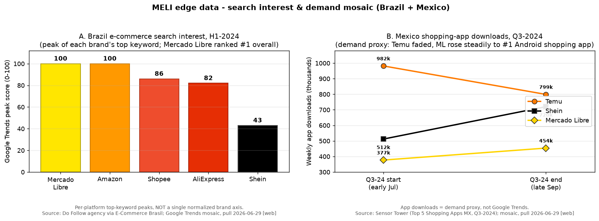
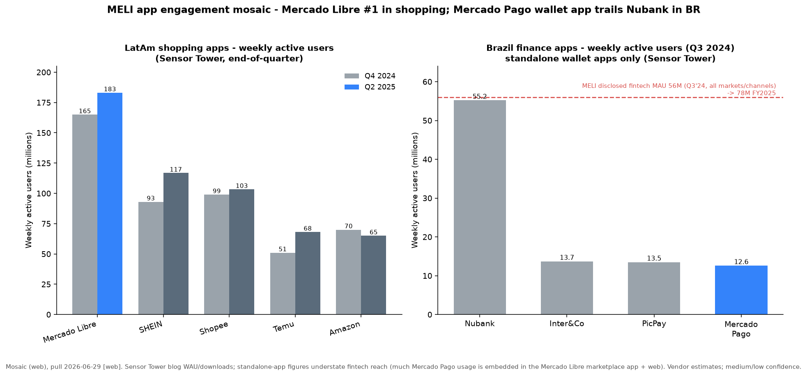

MercadoLibre, Inc. (MELI) — Deep-Dive Dossier
Business understanding, 10-year financial history, and a driver-based forward model. No valuation judgment, price target, or buy/sell view.
Capitalization (as of 2026-06-29)
| Item | Value |
|---|---|
| Shares outstanding | 50.7M |
| Current price | $1,683.13 |
| Market capitalization | $85,330M |
| Net debt | $5,093M |
| Enterprise value | $93,961M |
Consensus multiples (BEst, as of 2026-06-29)
| Multiple (consensus, BEst) | FY2026E | FY2027E | FY2028E |
|---|---|---|---|
| Forward P/E (adj) | 42.1x | 29.6x | 21.0x |
| EV / EBIT | 31.2x | 22.1x | 15.8x |
| EV / EBITDA | 22.6x | 16.5x | 12.3x |
| Dividend yield | 0.0% | 0.0% | 0.0% |
Fiscal year end December 31. Pull date 2026-06-29; price, consensus and multiples from Bloomberg/BEst via xBBG. EV is BBG-derived (market cap plus net debt plus operating-lease and fintech-funding items); a simple market-cap-plus-net-debt build gives ~$90,400M. MELI has never paid a dividend. Descriptive market context only.
Run basis
| Field | Value |
|---|---|
| Run date | 2026-06-29 |
| Fiscal basis | December 31 year-end; reporting currency USD |
| Reporting entity | MercadoLibre, Inc. (NASDAQ: MELI), Delaware-incorporated 10-K/10-Q filer |
| Latest data cut | FY2025 10-K (filed 2026-02-25); Q1 2026 10-Q (quarter ended 2026-03-31) |
| Source refresh | Filings/transcripts/decks archived 2026-06-29; BBG snapshots 2026-06-26/29 |
| Scope note | No valuation judgment, price target, or buy/sell view anywhere in this dossier |
Global caveats
| Issue | Reading note |
|---|---|
| Operating margin already below the latest full year | FY2025 operating margin was 11.1%, but Q1 2026 ran 6.9% on a multi-quarter decline (Q3'25 9.8%, Q4'25 10.1%). Treat ~7% as the current run-rate, not the FY2025 figure, throughout. |
| Geographic profit concentration is the disclosed dimension, and it is thin | Reportable segments are geographic (Brazil 52.6%, Mexico 22.4%, Argentina 20.6% of FY2025 revenue), but Commerce/Fintech is the analyzed cut. Argentina is ~42% of group direct contribution from 20.6% of revenue and is described, not modeled, as a standalone driver. See Section 20. |
| Several streams are bundled and not disclosed in dollars | Mercado Ads, Mercado Envíos shipping, and float/net-interest income sit inside larger lines; their sizes are estimates. No standalone Fintech operating margin exists (geographic-only segments). |
| Presentation and KPI breaks distort the time series | A 2023 revenue recast (financial income moved into revenue), a 2020 provision break-out, and a January 2024 KPI redefinition (Fintech MAU and unique active buyers split; TPV/transactions ex-P2P) mean the series is not clean across these joints. Food delivery added to GMV/items from Q2 2025. |
1. Business description, model & unit economics
MercadoLibre runs two large businesses on one balance sheet across roughly eighteen Latin American countries. Commerce (FY2025 revenue $16,294M, 56.4% of the total) is an e-commerce marketplace: third-party (3P) sellers pay take-rate fees, first-party (1P) retail sells MELI's own inventory, and both are wrapped with Mercado Envíos logistics, Mercado Ads advertising, classifieds, and the MELI+ loyalty subscription.▪ Fintech (FY2025 revenue $12,599M, 43.6%) is Mercado Pago: off-platform payment acquiring, a digital account with float and asset management, and the Mercado Crédito loan book.▪ The two streams are reported inside geographic segments (Brazil, Mexico, Argentina, Other); there is no standalone Commerce-only or Fintech-only P&L in the filings, so several margins below are triangulated and tagged as such.
Volume compounding drives the economics. FY2025 gross merchandise volume was $65,037M across 121M unique active buyers and 2,429M items sold; total payment volume was $277,823M across 78M fintech monthly active users (FY2025 10-K, KPI table). Items per buyer rose from 16.5 (2023) to 20.1 (2025) while the average item value declined from $31.87 to $26.78. Purchase frequency is the driver, and the falling average item value is the deliberate mix shift into lower-ticket categories plus the food-delivery transactions added to the KPI from Q2 2025 (FY2025 10-K, KPI table).▪
Demand-driver tree: Headline USD GMV, TPV, and revenue are the proxies; the ultimate exposures are real units sold, which compound faster than USD GMV because group-wide FX devaluation is a net headwind, not the inflation tailwind Argentina's line implies, and the credit book, a leveraged net-spread bet rather than a volume line. Around 20% of revenue and 24% of the last three years' growth is credit-risk-driven, and the acquiring spread inside another ~23% is being competed toward zero by Pix, so volume compounding describes Commerce, not the whole.
| Demand driver | Share of revenue | Ultimate exposure (decomposed) | Realized 3-yr contribution | Robustness |
|---|---|---|---|---|
| 3P marketplace fees (ex-ads) | ~40% (~$11.5B) | Items sold (2,429M, ~+31.7%/yr real) × an administered 3P take on 3P GMV (~20.5%, flat-to-down); GMV "price" is local inflation + a falling average item value ($31.87 → $26.78), so the real exposure is FX-neutral units, not nominal GMV | ~39% (~$5.3B) | Structural/secular — LatAm e-commerce ~12-15% of retail vs 25-30% mature (§6) — but the take rate is being deliberately cut (Brazil final-value and shipping fee cuts, §1) |
| Advertising | ~4-5% (~$1.3B est) | Ad load (~2% of GMV vs 5-6% at peers) × GMV = real units × rising ad penetration; ~80% EBIT margin | ~5% (~$0.65B est) | Secular, high-margin, the designated margin-recovery lever; small and estimate-only (§8) |
| 1P first-party retail | 12.3% ($3,544M) | Own-inventory units × gross retail price (carries local inflation), ~10-15% gross margin | ~15% ($2.1B) | Managed/discretionary (MELI dials 1P up or down), margin-dilutive; +84.7% YoY Q1'26 — lower-quality volume |
| Payments / acquiring + float | ~23% ($6,678M) | Off-platform acquiring TPV (~65% of $188B) × a spread eroding via Pix (FS&I ÷ TPV 2.94% → 2.40%) + float on ~$20B AUM (Selic/ARS rate-sensitive) | ~17% ($2.4B) | Volume secular but per-dollar take structurally falling; float is cyclical/rate-driven, not demand |
| Credit book | ~20% ($5,858M) | Average gross loans (~$9.5B) × NIMAL (a credit-risk-driven net spread, 22.4% → 17.8%); a balance-sheet/credit book, not a volume line, with CECL loss front-loaded | ~24% ($3.3B) | Highest amplitude — book +87%/yr, provision tripled, NIMAL 36% → 18% (§18); credit-cycle-exposed, durability unproven (StoneCo parallel) |
Netting it out, headline USD growth misleads in both directions — Argentine inflation lifts that country's reported line (+56% USD in FY2025, §6) while group-wide FX devaluation suppresses the rest, so real units compound faster than USD GMV (~31.7% vs ~24.7% over 13 years, §6); strip the ~24%-of-growth credit book and the ~17% eroding acquiring spread, and the durable, FX-neutral core of real demand (3P fees plus ads, ~44% of the last three years' growth) is higher-quality but smaller than the reported +39% implies.
Commerce — what sets price, volume, and cost
3P marketplace take rate. Third-party sellers, who transact more than 90% of marketplace volume, pay a final-value fee plus a flat fee on low-value items (FY2025 10-K, Item 1). MELI discloses a numeric 3P take rate only in its quarterly decks: 21.3% in Q2 2025, then 20.5% in Q4 2025, down 30 basis points year-over-year "mainly due to lower shipping revenue" with advertising and loyalty "offsetting some of the pressure" (Q2/Q4 2025 decks, slide 18).▪ On a 3P-GMV base of about $61.5B [estimate: total GMV $65,037M minus ~$3.5B 1P GMV], $12,750M of Commerce-services revenue divides to 20.7%, which reconciles to the disclosed figure. The take rate is an administered price MELI moves deliberately: it cut Brazil final-value fees in 2024 and again in early 2026 for competitively-priced sellers, and a Brazil seller shipping take-rate cut announced in Q1 2026 flows through the P&L from Q2 2026 (Q1 2026 call).
1P first-party retail. First-party product sales were $3,544M (12.3% of consolidated revenue), recognized gross, on under 10% of GMV.▪ The gross margin is roughly 10-15% [estimate: implied from "lower pure product margin" disclosure and a ~50-day inventory turn, FY2025 10-K] — thin retail economics that dilute the blended Commerce margin but fill category gaps in electronics, white goods, and CPG and feed a higher advertising attach rate (Q2 2022 call). 1P accelerated to +84.7% year-over-year in Q1 2026, faster than 3P (Q1 2026 10-Q).
Advertising. Mercado Ads is bundled inside Commerce services and not disclosed in dollars. Management quantifies it at "just over 2% penetration of GMV… a little more than $1 billion business, growing 38% year-on-year" (Goldman Sachs conference, 2025-09-10)▪, implying roughly $1.3B in FY2025 [estimate: ~2% of GMV per management], growing 67% FX-neutral in Q4 2025 (Q4 2025 call). Management has described its EBIT margin as in the high-70s to low-80s percent (Q2 2022 call); a precise current margin is not separately disclosed. This is the highest-margin sub-unit and the swing factor in the bull case for margin recovery, but it remains an estimate-only line. (Do not confuse it with the ~$1,690M "Advertising Expense" in MELI's filings, which is MELI's own marketing spend.)
Free shipping and logistics cost. The Brazil free-shipping threshold was lowered to BRL 19 in June 2025, the latest of several cuts from BRL 120 in 2017. Each cut depresses shipping revenue as a percentage of GMV and raises subsidy cost — the direct cause of recent gross-margin compression — but accelerates volume: Brazil items sold grew +56% in Q1 2026, "more than double" the pre-cut rate, while Brazil cost per shipment declined 17% year-over-year in local currency as density rose (Q1 2026 call). The deck framing matches the filings: the structural gross-margin drag is the 1P business plus shipping-carrier and operating costs as the managed network expands [deck: Q2 2021, 2021-08-04, slide 17].
Fintech — what drives the spread
Mercado Pago is three businesses sharing one user base. Acquiring/payments earns a commission on processed volume; the blended ratio of Financial-services-and-income to TPV declined from 2.94% (2023) to 2.40% (2025) as MELI moved upmarket to larger merchants and as Pix deflated card economics, with installment financing and credit cross-sell partly offsetting (Q4 2025 deck, slide 19).▪ About 65% of acquiring TPV is now off-platform (Q1 2026 deck, slide 15); on-platform payment is already inside the marketplace fee, so MELI does not double-charge sellers (FY2025 10-K, MD&A).
The credit book drives Fintech growth. Credit revenues reached $5,858M in FY2025 (+62.7%), rising to 46.5% of Fintech revenue, and overtook acquiring/float as the single largest Fintech stream in Q1 2026 ($2,012M vs $1,947M; Q1 2026 10-Q).▪ Gross loans nearly doubled to $12,508M at year-end 2025 and $14,555M by Q1 2026. The mix shifted hard into credit cards, now 45% of the book ($5,656M) from $2,639M a year earlier (FY2025 10-K, Note 5). The economics: a gross credit-revenue yield of roughly 61% [estimate: $5,858M credit revenue ÷ ~$9,540M two-point average gross loans; an upper bound], against provision of roughly 32% of average gross loans and funding cost of roughly 7%, leaves a disclosed net interest margin after losses (NIMAL) of 22.4% in FY2025 — down from 36.2% (2023) and 28.2% (2024), and 17.8% in Q1 2026.
Float is not lending capital. Asset under management grew to $19,873M by Q1 2026 (+77% year-over-year), but management is explicit that deposits do not fund the loan book ("we are not doing fractional banking", Q4 2025 call). The remunerated account is run as an engagement and customer-acquisition tool; the credit book is funded by third-party loans-payable, securitization, and receivable sales. The on-balance-sheet $9.4B net loan book stays on the balance sheet because actual loan sales are tiny ($44M Mexico 2024, $5M Argentina 2025); it is the acquiring-float credit-card receivables ($7.1B gross) that get sold and securitized for funding (FY2025 10-K, Notes 5/19).
Unit economics
| Unit (FY2025) | Volume | Realized price / take | Cost per unit | Gross profit / margin | Provenance |
|---|---|---|---|---|---|
| 3P marketplace order | 3P GMV ≈ $61.5B [est] |
take ≈ 20.5-20.7% of 3P GMV | shipping subsidy + carrier + collection + support; not stream-split | high-margin on the fee/ad layer, diluted by shipping subsidy | 3P GMV × 20.7% = $12,750M = Note 8 Commerce services ✓ |
| 1P first-party order | 1P GMV ≈ $3.2-3.4B [est], ~5% of GMV |
gross retail price = $3,544M revenue | COGS ≈ $3.0-3.2B [est] |
≈ $0.35-0.53B, ~10-15% gross [est] |
inventory $570M, ~50-day turn; "lower pure product margin" (FY2025 10-K) |
| Advertising | ~2.0% of GMV [est, mgmt] |
≈ $1.3B revenue [est] |
near-zero incremental | EBIT margin high-70s/low-80s (Q2 2022 call) | bundled in Commerce services, not disclosed in $ |
| Credit (blended book) | gross loans $12,508M (Dec-25) | gross yield ≈ 61% [est] |
provision ~32% + funding ~7% of avg gross [est] |
NIMAL 22.4% (disclosed) | credit rev $5,858M ÷ avg gross $9,540M; NIMAL$ ≈ $2,137M |
| Acquiring | Acquiring TPV $188,105M | blended FS&I/TPV ≈ 2.40% | interchange + processor/collection fees | gap — not disclosed at Fintech level | FS&I 2.40% × TPV = $6,678M ✓ |
A clean per-unit Commerce gross profit and a standalone Fintech operating margin cannot be built from the filings because cost of net revenues is reported consolidated and not split by stream, and the only segment profitability MELI discloses is geographic direct contribution. That is the binding disclosure limitation for this business and it is stated, not papered over. The table establishes four things: the fee and advertising layer of 3P is very high margin, 1P is thin retail, shipping is a deliberate subsidy, and the credit book's NIMAL is the one filing-grade per-dollar margin in Fintech.
Operating leverage runs the other way right now. Realized incremental EBIT margin (change in operating income ÷ change in revenue) was 7.5% in 2024 and 7.0% in 2025 — well below the 11-15% average operating margin, so recent growth has been margin-dilutive by design (FY2025 10-K, MD&A).▪ Capital intensity is modest: capex was $1,327M (4.6% of revenue, ~1.6x D&A), overwhelmingly logistics and technology build-out. The 3P marketplace is working-capital favorable; the capital sink is the credit book, which absorbed $6,659M of cash in FY2025 net lending (FY2025 10-K, cash-flow statement).
2. Key technologies & technical differentiators
MELI runs six technology stacks, and their defensibility is uneven. The real technical differentiation sits in two: the Mercado Envíos logistics network and the Mercado Crédito underwriting models. The rest differentiate through data, distribution, and scale rather than unique technology.▪
Mercado Envíos logistics. A managed first-party network — fulfillment centers, cross-docking, thousands of MELI Places partner pickup points, and a managed transport layer of dedicated aircraft, trucks, and last-mile vans — that replaces a fragmented third-party carrier base that could not deliver fast or cheaply in the region. More than 75% of items ship within two days and 96% move through MELI's own infrastructure (Goldman conference, 2024). It is hard to replicate because density is bought only with volume: the network took roughly a decade and FY2025 capex of $1,327M, and below a critical package density a sub-scale rival's unit costs do not work.▪ The differentiation shows up in the cost curve — cost per shipment declined 11% (Q4 2025) then 17% (Q1 2026) in Brazil local currency as volumes accelerated. The threat is not software substitution but rivals building comparable density: Shopee cut Brazil delivery times two to three days year-over-year and launched same-day in São Paulo [web, Sea FY2025 results].
Mercado Crédito underwriting. Proprietary credit scoring built on marketplace and payments behavioral data, used to underwrite the underbanked that the regional credit bureaus hold little on. For consumer credit the model uses roughly 2,000 variables, ~95% from internal data (Goldman conference, 2024); for merchants, MELI collects principal and interest directly from the borrower's own sales flow, structurally reducing default loss.▪ A new entrant can buy an ML stack but not the years of purchase-and-repayment behavior tied to one identity across commerce and fintech. The watch item is NIMAL: at 22.4% FY2025 it is roughly double Nubank's ~10.5% risk-adjusted NIM, but it is compressing, and open-finance data-portability mandates could narrow the bureau-data gap over time.
Mercado Pago payments stack. Online checkout, POS, QR, Pix integration, a digital account, and asset management. The hard part is ubiquity and the wallet/float loop, not the rails: in Argentina the wallet is near-universal and salaries route through it because balances are better remunerated than at banks. The rails themselves are commoditizing — Pix is the sharpest substitution threat in the company. Pix processed 63.4B transactions worth ~$4.6T in 2024 [web], its merchant-discount rate averaging ~0.33% or zero versus ~3.2% on credit cards [web, unverified]. MELI's defense is to integrate Pix and monetize the wallet/credit/float overlay rather than the processing spread, but the acquiring-spread layer is being competed toward zero.
Mercado Ads platform. Monetizes first-party, logged-in, point-of-transaction purchase-intent data — durable as third-party cookie signals degrade. The ad-serving technology itself is partnered (Google Ad Manager); the advantage is the data and the audience. Penetration is ~2% of GMV versus 5-6% at international peers, which frames the headroom.
Marketplace platform engineering. A decoupled "cells" microservice architecture and an in-house PaaS, running ~30,000 microservices on AWS as primary cloud at ~2.2M transactions/second peak [web]. The 2010 rewrite split a monolith into roughly 500 cells, which lifted deploy cadence from one to ~5,000 a week and 25% of new listings came through the open API by 2014 [deck: Investor Day 2014, 2014-10-15, slide 13]. Sound engineering that buys developer velocity, but the 10-K itself notes entry barriers for large technology companies are "relatively low" — the defensibility is the data flowing through the platform, not the pattern.
AI/GenAI tooling. A productivity layer, not a frontier-model program: proprietary "Verdi" orchestration agents plus GitHub Copilot and Gemini, with frontier models bought (OpenAI, Google) and run on AWS. The filing reports ~95% employee adoption, ~30% of production code written with AI (caveated, self-measured), and customer-service headcount cut from ~10,000 to ~7,000 while interactions tripled (Goldman conference, 2025). All of this AI-adoption disclosure first appeared in the FY2025 10-K; the track record is one year deep, against a decade-long logistics record. The durable advantage is the proprietary data the AI is pointed at, not technology competitors can license from the same vendors.▪
| Stack | Differentiation source | Technically defensible? | Sharpest threat |
|---|---|---|---|
| Mercado Envíos | physical density + capex + 10-yr operations | yes | rival fulfillment capex (Shopee) |
| Mercado Crédito | proprietary first-party data | yes (data, not the model) | open-finance portability; Nubank scale |
| Mercado Ads | first-party purchase-intent data | partly (ad-tech licensed) | Google/Meta scale; agency adoption |
| Mercado Pago | ubiquity + wallet/float loop | partly (not the rails) | Pix commoditizes acquiring spread |
| Platform (cells/PaaS) | engineering velocity | no (table-stakes) | cloud-supplier concentration |
| AI/GenAI | applied to proprietary data | no (models bought) | same vendors available to all |
3. Competitive advantages & moat assessment
MELI's advantage is real but open to erosion, in both businesses. It is meaningfully stronger than any Latin American incumbent and earns clear excess returns today, but it sits well short of a Visa/Mastercard or Google-class structural toll because the marketplace layer has low entry barriers, a well-funded rival is already profitable in MELI's largest market, and the credit edge is compressing.▪
ROE and ROIC basis. ROE = net income ÷ average total equity. ROIC is ambiguous here because the bulk of "loans payable and other financial liabilities" funds an interest-earning operating asset (the credit book), so debt-funded operating assets distort both NOPAT and invested capital. ROE is the more interpretable returns metric; the year-by-year ROIC is dominated by balance-sheet timing and should not be anchored on.
The financial evidence of a real moat is present. The Commerce take rate (Commerce revenue ÷ GMV) rose from ~6.7% (2018) to ~25.1% (2025), and the cleaner services-only rate roughly doubled from ~10-12% (2019-20) to ~19.6% (2024-25), while MELI gained share, which a price-taker could not do (FY2020/FY2025 10-Ks).▪ Logistics unit cost declined 11-17% year-over-year as volume rose, the mark of a density scale economy.▪ Advertising compounds faster than GMV (+67% FX-neutral versus GMV +26% in Q4 2025) at high margin. Consolidated ROE has run 36-52% the last three years.
The counter-evidence is equally concrete. MELI's own 10-K says marketplace "barriers to entry are relatively low" and users "can easily switch or use multiple [platforms] at the same time" — multi-homing with weak buyer switching costs (FY2025 10-K, Item 1A).▪ Shopee reached order-volume leadership in Brazil within five years and ran the market at positive adjusted EBITDA in 2025, showing the network effect is open to erosion [web, Sea FY2025 results].▪ Defending share is expensive and ongoing: free-shipping subsidies, take-rate cuts, 1P and cross-border losses, and the credit-card build drove consolidated operating margin down from 14.6% (2023) to 11.1% (2025) to 6.9% in Q1 2026. Management frames the spend as offensive moat-widening; the same dollars are also the cost of holding off Shopee and the Asian cohort. The honest assessment is that it is both.
Management claims: "Our e-commerce platform is the leader in the region based on gross merchandise volume," logistics is "an integral and crucial part of our value proposition," and lowering the free-shipping threshold is "strengthening network effects with higher purchase frequency… a logistics network that becomes more efficient with every incremental package" (FY2025 10-K, Item 1; Q1 2026 call). Management cites "record market share gains in commerce in Brazil and Mexico" in 2025 and 28 consecutive quarters of >30% revenue growth (Q4 2025 call).
External sources: corroborate the share gains against legacy retail (Magalu GMV declined 1.1% in 2025 with online sales down ~5.3% [web]) but cut against durability (Shopee profitable and #1 by orders in Brazil; Asian low-price entrants taking the long tail, which the 10-K itself concedes). A Mexican antitrust proceeding into MELI's and Amazon's Buy Box algorithms and logistics integration closed in August 2025 with no measures — a tacit acknowledgment that the logistics integration confers real market power, though not a protected one (FY2025 10-K).
Ground-up view: minimum efficient scale is high in fulfillment and low in the bare marketplace, so the durable edge lives in Envíos and in the first-party-data/ads layer, not the listing platform. Density economics push toward a natural oligopoly of one or two dense players per country, which is what is emerging (MELI #1 by GMV, Shopee #1 by orders in Brazil). Two-sided network effects are real but leaky: a funded entrant can buy the second side with subsidies, as Shopee did.
Source-of-advantage tests
| Claimed source | Evidence test | Result |
|---|---|---|
| Logistics scale (Envíos) | unit cost falls as volume rises | Passes — cost/shipment −11% to −17% YoY; counter: Shopee narrowing delivery gap |
| Take-rate / pricing power | take rate rises without share loss | Passes — total take 6.7%→25.1%, services ~10%→19.6%; but services plateaued and MELI is cutting Brazil fees |
| Advertising / first-party data | ad revenue compounds faster than GMV, high margin | Passes — ads +67% vs GMV +26%; ~2% penetration vs 5-6% at peers |
| Network effects (two-sided) | share and engagement compound | Real but leaky — 28 quarters >30%; counter: multi-homing, Shopee #1 by orders |
| Switching costs | retention, renewal pricing | Weak-to-moderate — loyalty/installments/card cross-sell deepen stickiness; buyer switching cost inherently low |
| Brand | NPS / preference premium | Moderate — record NPS in commerce and fintech, not quantified into pricing |
| Regulation / licenses | legal entry barrier | Not a Commerce moat; a cost in Fintech (rising prudential capital) |
Returns, tested three ways
Standalone (consolidated). Gross margin declined 50.2% (2023) → 46.1% (2024) → 44.5% (2025) → 43.7% (Q1 2026). Operating margin declined 14.6% → 12.7% → 11.1% → 6.9%.▪ ROE was ~36% in FY2025, flattered by ~6.3x asset/equity leverage from the fintech float and credit book. Returns sit above a high LatAm cost of capital, but the cushion is shrinking and the trend is adverse.
Versus peers (latest FY, peer figures [web] pull 2026-06-29; MELI from filings).
| Company | FY rev | FY rev growth | 5-yr rev CAGR | Gross margin | Operating margin | Capex intensity | Returns |
|---|---|---|---|---|---|---|---|
| MELI (LatAm #1 by GMV) | $28.9B | +39% | ~49% | 44.5% | 11.1% | 4.6% | ROE ~36% |
| Sea / Shopee | Sea $22.9B | +36% | ~39% | 44.5% | adj-EBITDA positive | n/d | Sea NI $1.6B |
| Amazon | $716.9B | +12% | ~13% | ~48% | 11.2% | ~15%+ | ROIC mid-teens |
| Shopify | $11.6B | +30% | ~32% | ~49% | 12.7% | low | FCF margin 17% |
| PDD / Temu | ~$60B | +12-19% | high | ~55-60% | high, compressing | low | strong but falling |
| Magazine Luiza | ~$5.7B | flat / GMV −1.1% | low | 31.5% | EBITDA 7.8% | n/d | NI −55% |
MELI's operating-margin premium over global peers has flipped. It is now roughly at parity with Amazon (11.1% vs 11.2%) and below Shopify (12.7%), and on a most-recent-quarter basis MELI's 6.9% sits below Amazon's ~11.7% and Shopify's ~15.7% while those rose.▪ Against Latin American incumbents the advantage is vast and widening — Magalu's GMV is shrinking and profits collapsing under a 15% Selic while MELI compounds ~40%.▪ The gap that is eroding is versus the global quality set, not the regional one.
Over time. The margin/ROIC premium over global peers is eroding; the premium over LatAm incumbents is widening; the logistics density advantage is widening on unit cost but being chased on delivery speed. In Fintech, the NIMAL premium over Nubank narrowed from ~26 points (FY2023) to ~12 points (FY2025) to less than that in Q1 2026 — the clearest leading indicator that the lending edge is normalizing.▪ The one unambiguously widening Fintech gap is scale and engagement (MAU +~30% for ten quarters, AUM +77%, NPS leadership), which supports future cross-sell but has not yet converted into a defendable margin.
MELI sits well above a no-edge commodity business — it earns clear excess returns and sets price — but below the structural, defensible-without-heavy-reinvestment tier, because it must spend heavily to defend and a funded rival is already profitable in its largest market. The logistics-density and ads/data layers are the durable parts; the bare marketplace and the compressing credit spread are the parts open to erosion.
External engagement data (Appendix C2, app-engagement mosaic): Mercado Libre is Latin America's #1 shopping app by active users and the only top-five app both largest and still compounding (weekly active users ~165M Q4 2024 → 183M Q2 2025), on lower download velocity than Temu, so its growth is led by active use rather than acquisition spend. The disclosed 78M fintech MAU is more than double the ~31-34M standalone Mercado Pago wallet-app WAU because most payments usage is embedded in the marketplace app and on the web, so comparisons that use only standalone fintech apps understate MELI's engagement [web].
4. Competitive landscape & market sizing
MELI is the clear regional scale leader — ~$65B GMV, on the order of a third of Latin American retail e-commerce, 3-5x its nearest single regional rival — but the lead is country-by-country, not a regional monopoly, and it is defended with margin spend, not collected as monopoly rent.▪
Market structure. MELI competes in roughly eighteen country markets with different #1 players. Brazil (~52% of revenue) is a fragmenting oligopoly: MELI #1 by GMV, Shopee #1 by order volume, then Amazon, Magalu, and the Asian cross-border cohort.▪ Mexico (~22%, the fastest-growing geography) is an Amazon-MELI duopoly where MELI is #2.▪ Argentina (~21%) is MELI's dominant home market. The profit pool sits in the 3P take rate, advertising, and the fintech/credit attach layered on GMV, not in moving boxes (1P and shipping are low- or negative-margin); MELI's ~20.5% 3P take rate is at the high-monetization end, which is what the low-price entrants undercut.
Market sizing (bottom-up). Latin American retail e-commerce GMV was ~$191B in 2025, +12.2%, "the world's fastest-growing region" [web, eMarketer]; Brazil ~$70B (R$380B, +15%) [web, NeoFeed]; Mexico ~$52-62B compounding ~18% [web, Mordor]. MELI's $65,037M GMV is ~30-34% of the regional pool [estimate: MELI GMV ÷ ~$191B LatAm retail e-commerce] — roughly one dollar in three of the region's online-goods spend, with soft bounds because MELI's GMV spans categories and countries outside the $191B definition and now includes food delivery, and the TAM denominator varies ~4x across publishers. Penetration is the real runway: Latin American e-commerce is ~12-15% of retail versus ~25-30% in mature markets, and management notes its Brazil sales are "still very, very small compared with total retail sales" (Q3 2025 call).
Peer scale & KPI — Commerce (LatAm marketplace)
| Player | GMV (latest FY) | GMV growth | Commerce/marketplace rev | LatAm share & direction | Segment margin |
|---|---|---|---|---|---|
| MELI | $65,037M FY2025 | +26% USD / ~25.5% 5-yr CAGR | $16,294M (3P $12,750M + 1P $3,544M) | ~30-34%; #1; rising | 3P take 20.5%; no geo-split margin |
| Shopee (Sea) | $127.4B global; Brazil ~$10-13B [est] |
global +27% | Sea total $22.9B (mostly SE Asia) | Brazil ~14%; #1 by orders; rising fast | Shopee Brazil adj-EBITDA positive |
| Amazon (BR+MX) | Brazil ~$8-9B [est]; MX leader |
growing, Prime-led | not disclosed for LatAm | Brazil ~12%; #1 Mexico; rising | not disclosed |
| Magazine Luiza | total R$18.2B ≈ $3.3B (−1.1%) | declining | ~$5.7B incl. stores | Brazil ~12%; losing low-ticket | thin; ceding ground |
| Shein | Brazil ~$2.8B 2024 (+698% 2021-25) | hyper-growth | cross-border fashion | rising | n/d |
| Temu / TikTok Shop | Brazil ramping (entered late 2024) | new entrants | cross-border | small, rising | n/d |
Brazil battleground. MELI's Brazil GMV is ~$27-37B [estimate: 39-47% share of a ~$70B market; two angles 1.4x apart], ~40-50% of the market — share that "doubled since the pandemic" and rose ~4 points in the last year (Goldman conference, 2025). Shopee holds ~14% GMV and is #1 by order volume. The Asian cohort (Shopee from near-zero in 2019, Shein +698% 2021-25) is the single biggest structural shift, adverse at the low-ASP end, which MELI's own 10-K concedes "gained significant market share in Latin America through low-price strategies" (FY2025 10-K, Item 1A).▪
Mexico battleground. Amazon leads MELI; the two together hold roughly 40% of e-commerce with ~60% spread among local, regional, and global retailers, and exact individual shares are not disclosed by the cited sources [web, Mordor / eMarketer]. On traffic, Amazon draws ~121M monthly visits versus MELI's ~99M [web]. MELI is gaining, backed by ~$3.4B of 2025 group capex (+38%), but it is #2 in its fastest-growing geography.
Defense is working on volume. MELI is holding share by cutting 3P take rates and shipping thresholds — trading margin for volume — and the volume line is responding: items sold accelerated 26% → 42% → 45% (Brazil, into Q4 2025), and Q1 2026 confirmed it with consolidated GMV +42% and items sold +47% year-over-year (Q1 2026 deck).▪ The scale lead is earned and reinvested, not a rent.
Peer scale & KPI — Fintech (Mercado Pago)
Mercado Pago is the LatAm payments-volume leader and the broadest multi-country operation, but it leads no single sub-market.▪ In Brazil card acquiring it is ~5th by TPV (~9%, behind Rede ~18%, Cielo ~17%, PagBank ~17%, Stone ~15%) though ~14% by merchant count, reflecting a long-tail/QR skew [web, fintechs.com.br]. In consumer banking it is materially smaller than Nubank.
| Player | Active users | Deposits / AUM | Credit portfolio | Credit YoY |
|---|---|---|---|---|
| Mercado Pago | 78M MAU FY25; 83M Q1'26 (+29%) | AUM ~$19,873M Q1'26 (+77%) | $9,365M net / $12,508M gross; $14,555M gross Q1'26 | +91% net FY25; +87% gross Q1'26 |
| Nubank | 131M customers (+15%) | deposits $41,900M (+29%) | $32,700M (+40%) | +40% |
| PagBank | 34M clients | deposits ~$7,300M (+13%) | lending ~$820M | n/d |
| StoneCo | 4.7M MSMB (+15%) | deposits ~$2,000M (+27%) | ~$500M | +23% QoQ |
Mercado Pago's $188B acquiring TPV is the largest single-company acquiring volume in LatAm because it spans Brazil, Mexico, and Argentina, and it is gaining share (acquiring TPV +41% FX-neutral in Q1 2026 with credit cross-sell to sellers up to 36% from 26%). But Nubank is ~1.7x its active base, ~2x its deposit-like AUM, and ~3.5x its net credit book, and Mercado Pago's unit credit profitability is compressing while Nubank earns a higher ROE (33%) at a third of the NIMAL via cheap deposit funding.▪ Pix is structurally commoditizing the acquiring pool MELI competes in: as Pix takes share of payment value (~40% of Brazil e-commerce, projected ~51% by 2027 versus cards at ~36% [web, unverified]), the volume migrates and the take per dollar falls for every acquirer.▪
External search/download and engagement data (Appendix C1-C2): the real Brazil demand threat is Shopee plus the Chinese cross-border trio (AliExpress/Shein/Temu), not Amazon — Shopee has closed to roughly second on web visits while Amazon loses visit share. Temu leads raw downloads but converts far fewer installs into sustained use (MELI ~165-183M weekly active users versus Temu ~51-68M). In fintech apps the contest is country-specific: the standalone Mercado Pago app trails Nubank ~4:1 on Brazil WAU but is the #1 financial app by downloads in Mexico since December 2024 [web].
5. Value chain & profit pools
MELI sits in three stitched-together chains, so the dollar split is done three ways.
The 3P marketplace dollar. On $100 of 3P merchandise, the seller keeps ~$80.4 (cost of goods plus seller margin) and MELI's Commerce-services take is ~$19.6.▪ Inside MELI's take, shipping carrier cost (netted $979M in FY2025, down from $1,021M despite higher volume), the payment leg (card networks set interchange; Pix near-zero), and sales tax (6.2% of revenue, a government pass-through) are the cost layers; the fee and ad layer is the high-margin residual. MELI sets the fee schedule and the shipping subsidy; carriers price the haul; the seller sets the list price but MELI shapes it through competition and free shipping.
The acquiring dollar. On $100 of off-platform card TPV, the issuing bank and card network take ~$1.0-2.0 of interchange and scheme fees [estimate: LatAm interchange norms], MELI keeps ~$0.5-1.5 net [estimate: residual MDR less interchange], and the merchant pays the full MDR. On Pix and QR volume the card networks are bypassed entirely, so MELI keeps more of a smaller fee. Mexico's interchange cap was postponed, so no near-term step-down (Q4 2025 call).
The credit dollar. On $100 of average gross loans (annualized, FY2025): gross yield ~$61, less credit losses ~$30-32, less funding cost ~$7-9, leaves MELI's NIMAL of $22.4 [estimate: triangulated from credit revenue, provision, and the NIMAL identity]. By book, merchant NIMAL is "high 40s," consumer "in the 30s," and credit card not yet NIMAL-positive on average — half the Brazil card book is, and cohorts older than two years are (Q4 2025 call).
Binding constraint. Funding and regulatory capital for the credit book is the binding constraint, and it is now set by the unit economics of credit (NIMAL compression), not by access to funding.▪ Funding access is in fact improving with scale: Brazil securitization-vehicle spreads were renegotiated down in June 2025 (e.g., CDI+2.50% to CDI+2.25%). But the FY2025 10-K added a new risk factor naming reliance on structured-credit vehicles "with a concentrated investor base" whose reduced participation "could constrain our funding capacity." The secondary constraint is fulfillment capacity, an active capex program.
Bargaining-power trajectory. Power is moving toward MELI at most interfaces: it holds the 19.6% take while cutting shipping thresholds, built its own carrier network (carrier cost declined despite volume), and pushes its own payment methods to 20-30% of Mexican marketplace transactions. The one interface MELI cannot disintermediate is the app stores (Apple/Google), where 15-30% commissions and anti-steering constrain digital-goods and loyalty monetization.
Circularity. Merchant loans are collected from the merchant's own GMV flowing through Mercado Pago; most Brazil credit cards are issued to existing marketplace buyers at near-zero acquisition cost; MELI's own payment methods fund transactions on which it earns on both commerce and fintech.▪ Float is not circular credit financing — deposits are not used to fund the loan book.
6. Secular & industry trends
MELI sits on two distinct secular curves anchored to one fact: Latin America is a ~650M-person region structurally under-penetrated in both online commerce and formal finance (FY2025 10-K, Item 1).
Commerce penetration: Latin American e-commerce is ~12-15% of retail versus ~25-30% in mature markets and ~45% in China [web]; Mexico is forecast to reach 17.7% by 2026, passing the US [web, eMarketer].▪ The category has 2-3x headroom merely to reach mature penetration. The demand lever MELI pulls is shipping cost and speed: each Brazil free-shipping-threshold cut "accelerated growth of GMV, TPV, frequency, and new users," and new first-time buyers still run ~7-8M per quarter "after 25 years" (Goldman conference, 2025).
Fintech penetration: roughly 70% of LatAm adults are unbanked or underbanked; Mexico credit-card penetration is "less than 20%" (Goldman conference, 2025).▪ Brazil's Pix rail reached ~93% of adults and ~$6.7T TPV in 2025, creating the digital-payment habit on which the wallet, AUM, and credit compound [web]. The lending and asset-management runway is the longest secular curve MELI has, but it is also where the binding constraint sits and where Nubank competes hardest.
Volume, cyclical versus secular: items sold compounded ~31.7%/yr over thirteen years (67.4M in 2012 to 2,429M in 2025) and USD GMV ~24.7%/yr; the ~9-point gap is FX devaluation plus a declining average item value.▪ The underlying volume trend is materially stronger than the USD-reported numbers show, because USD GMV growth is depressed by currency, not weak demand. The 2020 COVID pull-forward (items +90%) did not reverse; items re-accelerated to +22%, +27%, +36% in 2023-2025. The 2025 re-acceleration is investment-driven (the BRL 19 threshold), not cycle-driven. Argentina's FY2025 +111.7% local / +56.2% reported is part secular adoption and part Milei-era macro recovery and inflation accounting, not durable real volume.
Share math: MELI's growth (USD GMV +26%, local higher) far exceeds market growth (USD ~9%, Brazil local ~20%), so most of MELI's growth is share capture plus monetization layering, not the penetration tide.▪ From a ~35-47% Brazil base, share gains are mathematically finite, so the back half of any decade-long 25% story must come increasingly from rising penetration plus monetization (ads, fintech), not from continued ~4-point-per-year share grabs.
Shifts that change the slope: Pix is a tailwind for volume and a threat to acquiring margin — the enabler and the margin threat are the same force; MELI became more selective on thin-margin Pix acquiring (Q3 2025 call). Brazil's de-minimis import tax (20% federal plus ICMS) cut cross-border imports −11% in 2024 and −27% year-over-year in January 2025, blunting the Shein/Temu threat faster than the bear case assumed [web].▪ Banking licenses (Mexico, Argentina, in process) would unlock salary deposits and deeper monetization. Rising prudential capital (Brazil PI 10.5% from January 2025) raises the credit book's capital intensity. AI lowers cost-to-serve but agentic shopping could disintermediate discovery and ads.
What would break first: in order of lead time, new-buyer adds (~7-8M/quarter) shrinking; items-sold growth decelerating toward the ~15-20% local market rate; GMV growth converging to market growth; Fintech MAU growth falling below ~20%; NIMAL falling without offsetting volume; advertising stalling at ~2% of GMV. Items growth re-accelerated to +47% in Q1 2026, currently the opposite signal.
External search data (Appendix C1, Google Trends mosaic): the breakout fintech search brand across the region is Nubank, not Mercado Pago — MP's compounding surfaces in reported MAU (+29% year-over-year in 2025) and the Pix volume tailwind rather than in brand search interest, consistent with its embedded-wallet usage pattern [web].
7. Critical points
-
The whole forward question turns on one mechanism: credit-book provisioning. The book is growing ~50-90%/yr, and under CECL the full expected loss on each new loan plus on $9,001M (Q1 2026: $11,892M) of undrawn credit-card commitments is provisioned up front. Provision for doubtful accounts tripled from $1,050M (2023) to $3,091M (2025), 10.7% of revenue, and is the direct cause of operating margin declining 14.6% → 11.1% → 6.9% (Q1 2026). Whether margin recovers turns on whether this provision rate normalizes as book growth decelerates (base case) or stays elevated as the down-market push seasons into real losses (bear case). See Section 8.
-
NIMAL has compressed 1,840 basis points in two years, mostly by design. Net interest margin after losses declined 36.2% (2023) → 22.4% (2025) → 17.8% (Q1 2026). The compression is overwhelmingly deliberate mix and reach — credit cards rose from 40% to 46% of the book, and management extended Brazil personal-loan duration from 5 to 8 months and reached "more risky" lower-spread segments on purpose — not (yet) hidden losses. The after-loss spread dollar pool grew ~32% in FY2025 even as the percentage declined. The watch item is consumer NPL and coverage creeping up; the deterioration thesis is not corroborated by all-time-low card NPLs (4.4% in Q4 2025).
-
Reported cash flow vastly overstates discretionary cash. FY2025 operating cash flow of $12,116M is ~8x MELI's own adjusted free cash flow of $1,481M, because customer-fund balances and the credit book inflate OCF. Adjusted FCF has been roughly flat (~$1.4-1.5B) while net income doubled, and turned negative $(56)M in Q1 2026 because the credit book absorbs the incremental cash. Any analysis treating reported OCF as discretionary overstates capital-return capacity roughly eightfold.
-
Near-zero equity dilution is real and unusual. Diluted shares have been ~50.7M since 2019, with only 2,750 unvested restricted shares and 21 incremental diluted shares in FY2025; no options have been granted since 2007. Compensation is cash-settled via the LTRP, so the cost appears as a growing cash obligation ($548M fair value, $238M cash paid in FY2025) that scales with the share price, not as new shares.
-
The ecosystem was built, not bought. Total M&A spend across 2014-2025 was ~$169M, goodwill is $163M, and there has never been a goodwill impairment. Logistics, payments, credit, and advertising were all built in-house. The clean record is also a small-sample record: there is essentially no evidence about whether this management can price or integrate a large deal.
-
The operating-margin premium over global peers has flipped. MELI's operating margin is now roughly at parity with Amazon and below Shopify, and on a recent-quarter basis below both, having been a clear premium five years ago. Versus LatAm incumbents the advantage is widening; versus the global quality set it is eroding. This is the cleanest single moat-watch datapoint and it cuts against the "widening moat" framing on a pure-margin basis.
-
Argentina is the unmodeled swing factor. Argentina is ~42% of group direct contribution ($2,481M of $5,903M) from 20.6% of revenue at a 41.6% direct-contribution margin (versus Brazil's 13.7%), and that margin is already declining (47.3% → 41.6% in three years).▪ The consolidated-margin recovery thesis leans on Argentina, but no workpaper models the scenario where Milei-era disinflation pulls ARS rates and the float/credit spread down. This is flagged in Sections 13, 17, and 20.
-
Market reactions have become asymmetric to margin, not revenue. Revenue beat every quarter (+34% to +49%), but EPS missed for four straight quarters (Q2 2025 through Q1 2026) on margin. The H2 2025 misses barely moved the stock (Q2'25 +0.5%, Q3'25 +2.8%) because the market had begun to expect them, while the smaller Q1 2026 miss (−3.3%) drew a −12.7% next-session reaction after management declined to set a margin floor.
8. Variant perceptions
Each point below is where the evidence cuts against a consensus or management framing.
-
"Margin compression is MELI confidently widening the moat." The same spend — free-shipping subsidies, take-rate cuts for low-price Brazil sellers, cross-border — is also the cost of defending against a Shopee that is #1 by orders in Brazil and profitable, plus Temu and Shein. Consolidated operating margin declined ~7.7 points (14.6% to 6.9%) while Amazon's roughly doubled. Offensive and defensive spend are not separable here; the honest assessment is that it is both.
-
"MELI's take rate proves durable pricing power." The services-only take rate has plateaued at ~19.6% (2024-25), the disclosed 3P take rate declined 30 basis points to 20.5% in Q4 2025, and MELI is actively cutting Brazil fees for competitively-priced sellers. Base-fee pricing power has limits at the low-price end; future monetization upside is concentrated in advertising, not core fees.
-
"Falling NIMAL signals deteriorating credit." The compression is mostly deliberate mix (credit cards from 40% to 46% of the book) and reach (longer-duration, lower-spread Brazil personal loans), and the absolute after-loss spread pool grew ~32% in FY2025. Coverage (149% of 90-day-plus NPL) and all-time-low card NPL (4.4%) do not corroborate deterioration, though consumer NPL and coverage bear watching. The StoneCo 2021 precedent — fast Brazil credit scaling undone by bad data and macro stress, ~80% equity loss — is a direct structural parallel, mitigated but not eliminated by MELI's in-house models and short durations [web].
-
"Mercado Pago is the dominant LatAm fintech." It leads neither Brazil card acquiring (~9% TPV, 5th) nor consumer banking (Nubank is 3-4x on deposits and credit). It leads on breadth — multi-country, multi-product, captive marketplace — not on any single line's scale.
-
"FY2025 GMV reacceleration is pure organic momentum." Much of the USD reacceleration (+26% versus +15% in FY2024) is an FX base effect, and food-delivery GMV/items were folded in from Q2 2025. FX-neutral growth was steadier throughout (Q4 2025 FX-neutral GMV +37%), so the underlying line was strong but the optical acceleration overstates it.
-
Advertising sizing rests on management commentary, not disclosure. The ~2%-of-GMV, ~$1B+ figure and the high-70s/low-80s EBIT margin are management statements (Goldman conference 2025; Q2 2022 call), not filed numbers. The bull case's gross-margin recovery leans on ads scaling, which is an estimate-only line.
-
The 2023 buyback was not a clean price-disciplined return. Of ~$743M deployed under the only authorization in the record, ~$386M was booked as a foreign-currency loss — the cost of accessing USD through Argentina's blue-chip swap — and buybacks have been ~$1M/yr since, even after a ~35% price decline. There is no observable price-sensitive return policy; capital return is residual to the credit book.
-
Mexico share is not the "Amazon 40% vs MELI 30%" sometimes quoted. The cited sources give the two leaders ~40% combined with ~60% spread among other retailers; exact individual shares are not disclosed. Amazon leads, MELI is #2 and gaining.
Four forward assumptions are weak — the 3P take-rate recovery, the provision-rate normalization, the gross-margin recovery, and the sub-band S&M ratio — and are flagged in Section 17, where the model depends on them.
9. History & inflection points
| Date | Event | Why it mattered |
|---|---|---|
| 1999 | Founded (Galperín); operations in Argentina, Brazil, Mexico | The founder-led, 25-year horizon that still governs strategy |
| 2003-04 | Mercado Pago launched | The fintech seed inside a marketplace |
| Aug 2007 | NASDAQ IPO (~$49.6M net) | Public-company history begins |
| 2013-14 | Mercado Envíos launched | The logistics build that becomes the durable moat |
| Oct 2016 | eBay sells its entire stake; Mercado Crédito launched | Independence; the credit business begins |
| 2017 | Free shipping + Mercado Puntos loyalty rolled out; Venezuela deconsolidated ($85.8M loss) | The subsidy model; a segment later dropped from disclosure |
| Q1 2018 | Dividend suspended | Pivot from token income to full reinvestment |
| 2018-19 | Correios postal price shock; Amazon steps up Brazil; first operating losses (−4.8%, −6.7%) | Competitive-attack trough |
| Mar 2019 | ~$1,966M equity raise incl. $750M PayPal + $100M Dragoneer; $880M 2028 converts (2018) | The war chest funding the trough |
| 2020-21 | COVID demand shock (items +90%); operating income swings positive | The build pays off; gains stick |
| 2023 | Operating margin peaks at 14.6%; CFO transition (Arnt to de los Santos); financial-results recast | The high-water margin |
| 2024-26 | NIMAL compresses 36.2% → 17.8%; credit book to $14.6B; operating margin to 6.9% | The fintech/credit transformation |
| Jan 2026 | First CEO change in 27 years: Galperín to Executive Chairman, Szarfsztejn CEO | Founder steps back, retains chair and capital allocation |
Five inflections.
- Profit-to-reinvestment pivot (2016-17). From a profitable, dividend-paying ~21%-margin marketplace to an all-in ecosystem builder; operating margin declined 21.4% to 4.6%. Galperín will trade reported profit for ecosystem scale the moment he sees a land-grab, and signals it by cutting the dividend rather than half-measuring.
- Competitive-attack trough (2018-19). Under attack from a deeper-pocketed Amazon plus a postal price shock, MELI raised ~$2.85B and doubled down rather than retreating, bringing in PayPal at the bottom. The clearest evidence of how the company behaves under stress.
- COVID payoff (2020-21). The pandemic pulled forward years of adoption onto the network MELI had just built; revenue went 4.6x in three years and the gains did not reverse. Windfalls are reinvested, never banked.
- Fintech/credit transformation (2021-present). Fintech went from sidecar to 43.6% of revenue; the loan book scaled from ~$0.7B (2020) to $9.4B (2025); the mix shifted into lower-spread cards, compressing NIMAL and operating margin. MELI is morphing into a credit business whose economics — funding, provisions, prudential capital — differ structurally from the asset-light take rate.
- The CEO handoff (2026). The first in 27 years, executed with seven months' notice to an internal candidate, with the founder retaining the chair and capital allocation. Founder control persists.
Management's current account reframes three episodes: the 2018-19 losses were partly reactive to the Correios shock, not the clean "we chose to invest" version told now; Venezuela has been written out; and the dividend-paying past is rarely mentioned alongside today's "we reinvest everything" message.
10. Management, incentives & capital allocation
Leadership. Founder-run with an internally-promoted bench and very low turnover. Marcos Galperín (CEO 1999-2025) became Executive Chairman on January 1, 2026, retaining the board chair and capital allocation; Ariel Szarfsztejn (joined 2017, ran Mercado Envíos then Commerce) became CEO. Martín de los Santos (CFO since January 2024, previously ran Mercado Crédito) and Osvaldo Giménez (Fintech President, ran Mercado Pago since 2004) round out a bench of long-tenured internal promotions. The CFO succession (2023) and CEO succession (2026) were both orderly and internal.
Compensation. Three elements: a small base salary; an annual cash bonus weighted net revenues 40%, income from operations 35%, TPV-adjusted 10%, competitive NPS 15%, capped at 100% of target; and the Long-Term Retention Program (LTRP), a cash-settled plan paid over six years, half fixed and half indexed to the share price against a base set on the prior year's final-60-day average. There are no equity or option grants to executives — "management compensation is tied to capital markets performance through our LTRPs, and not through the issuance of stock" (FY2025 proxy). About 95.5% of CEO target comp and 84.4% of other NEOs' is performance-based.
The design measures two things. First, the bonus is half-weighted to absolute top-line and volume (revenue 40% plus TPV 10%) with no per-share or capital-efficiency metric, though it is capped and a small slice of pay. Second, the share-price-indexed LTRP creates symmetric pay-for-performance: CEO realized pay swung from $21.5M (2020) to $8.3M (2022) with the stock. Say-on-pay support has run in the low-80s% — below the S&P norm — reflecting persistent proxy-advisor reservations on founder-company features: a related-party board (the CEO's brother is a director; a co-founder chairs the audit committee and holds a pledge/forward on 20,000 shares that a strict anti-pledge policy would bar), a combined-then-split chair, and no executive stock-ownership guidelines.
Skin in the game is concentrated in the founder (the Galperín Trust holds 7.00%, ~3.55M shares) who just stepped back; the operating CEO now running the company owns 76 shares. Alignment runs through cash LTRP, not equity ownership.
Capital allocation — the 10-year record
MELI reinvests nearly all its cash rather than returning it to shareholders, and the cash-flow statement matches what management says.
| FY ($M) | OCF | Capex | Credit book Δ | M&A | Buyback | Equity issued |
|---|---|---|---|---|---|---|
| 2016 | 190 | 69 | 7 | 7 | 0 | 0 |
| 2017 | 269 | 55 | 72 | 9 | 0 | 0 |
| 2018 | 231 | 93 | 57 | 4 | 0 | 0 |
| 2019 | 451 | 137 | 174 | 0 | 1 | 1,867 |
| 2020 | 1,182 | 254 | 345 | 7 | 54 | 0 |
| 2021 | 965 | 630 | 1,348 | 51 | 486 | 1,520 |
| 2022 | 2,940 | 455 | 1,701 | 0 | 148 | 0 |
| 2023 | 5,140 | 509 | 2,047 | 0 | 356 | 0 |
| 2024 | 7,918 | 860 | 4,688 | 6 | 1 | 0 |
| 2025 | 12,116 | 1,327 | 6,659 | 0 | 1 | 0 |
| Σ 2016-25 | 31,402 | 4,389 | 17,098 | ~84 | ~1,047 | ~3,486 |
Over the decade MELI generated ~$31.4B of reported operating cash flow and returned almost nothing: ~$1.0B of buybacks (one real year, 2023), ~$58M of dividends (suspended 2019), zero since. Essentially all internally generated cash plus ~$3.5B of equity went into the credit book ($17.1B on-balance-sheet growth), the float portfolio (~$4.1B), and capex ($4.4B). Equity raised exceeds all-time buybacks 3-to-1 — over the decade MELI has been a net issuer, not a net repurchaser. The reinvestment worked at the per-share line: revenue per diluted share went from $79.9 (2020) to $569.9 (2025) and operating income per share from $2.6 to $63.1. The exception is adjusted FCF per share, roughly flat at ~$24-29, because incremental cash funds the loan book.
The only buyback authorization in the record (February 2023, $900M) was largely an Argentine dollar-repatriation maneuver: ~$386M of the ~$743M deployed was booked as a foreign-currency loss. No successor authorization is disclosed in the FY2025 10-K or Q1 2026 10-Q, and repurchases have been ~$1M/yr since even after a ~35% price decline — there is no observable price-sensitive return policy. The stated framework (capital to the credit book and lending first, then logistics and technology capex) and the revealed behavior agree.
11. M&A, divestitures & deal track record
MercadoLibre is the opposite of a serial acquirer. Over 2014-2025 it spent ~$169M of cash on acquisitions — less than 1% of a single recent year's operating cash flow. The largest deal it has ever done is Kangu at a $53M aggregate price (2021). Total goodwill is $163M on ~$28.9B of revenue, there has never been a goodwill impairment, nothing has been bought and later divested, and the one acquisition vehicle MELI sponsored (the MEKA SPAC) dissolved in January 2024 without a deal. The judgment is disciplined by abstention: management built rather than bought and took zero impairments, but precisely because it has never attempted a large deal, there is essentially no evidence about whether it can price or integrate one. The clean record is a small-sample record.
| Date | Counterparty | Dir | Type | Price | Goodwill | Impairment | Outcome |
|---|---|---|---|---|---|---|---|
| 2014 | Inmobiliaria Web / Inmuebles Online | acq | Chile/MX real-estate classifieds | $38.0M | small | None | folded into Classifieds |
| 2014 | Business Vision | acq | Argentina software | $4.8M | n/d | None | absorbed |
| 2015 | KPL Soluções | acq | Brazil e-commerce ERP | $22.7M | n/d | None | merged into Ebazar |
| 2015 | Metros Cúbicos | acq | Mexico classifieds | $29.9M | n/d | None | merged |
| 2016 | Monits; Axado | acq | AR software; BR logistics TMS | $8.6M | small | None | folded into Envíos |
| 2018 | Kaitzen/Kinexo; Machinalis | acq | Argentina software / ML | ~$4.2M | small | None | absorbed |
| 2020 | Kiserty | acq | Uruguay software | ~$6.9M | small | None | absorbed |
| Nov 2021 | Kangu | acq | BR/MX/CO logistics hubs | $53M | $45M | None | into Envíos; earn-out paid Jan 2025 |
| Dec 2021 | Redelcom | acq | Chile POS / payments | $24M | $23M | None | into Mercado Pago Chile |
| 2024 | unnamed tuck-in | acq | BR/MX/AR | ~$6M cash ($12M goodwill) | $12M | None | immaterial; not named in 10-K |
The deals fall into three thin buckets: software acqui-hires, two real-estate classifieds businesses (2014-15), and two 2021 capability tuck-ins (Kangu logistics, Redelcom POS). Both 2021 deals priced almost entirely as goodwill, paying for team and market position, not hard assets. Non-M&A items frequently mis-filed as deals — the 2019 PayPal/Dragoneer placements and the MEKA SPAC — were capital into MELI and a vehicle, not MELI buying assets; the Venezuela deconsolidation (2017) was macro-forced, not a divestiture. The only reconciliation gap is the unnamed 2024 tuck-in, where $12M of goodwill was added against $6M of cash — immaterial.
12. Capitalization & balance sheet
MELI runs a two-layer balance sheet. The corporate layer is conservatively financed; the fintech-funding layer is large, fast-growing, short-dated, and mostly local-currency.
Debt stack (12/31/2025)
| Instrument | Currency | Rate | Maturity | Carrying ($M) |
|---|---|---|---|---|
| 2026 Sustainability Notes | USD | 2.375% fixed | Jan 2026 | 367 |
| 2031 Notes | USD | 3.125% fixed | Jan 2031 | 541 |
| 2033 Notes | USD | 4.900% fixed | Jan 2033 | 735 |
| Bank loans | BRL/USD/EUR/CLP/MXN/UYU | mixed fixed & CDI/TIIE-linked | 2026-2031 | 1,536 |
| Financial bills & deposit certificates | BRL | mostly CDI-linked | 2026-2029 | 2,282 |
| Collateralized (securitization) debt | BRL/ARS/MXN/CLP | local + spread | 2027-2029 | 2,852 |
| Commercial notes | BRL/ARS/USD | DI/IPCA/fixed | 2026-2029 | 341 |
| Secured lines / promissory notes | ARS/MXN/EUR | fixed (ARS ~34-36%) | 2026-2027 | 367 |
| Finance leases / overdrafts / other | — | mixed | — | 172 |
| Total loans payable & other fin. liabilities | 9,193 |
Weighted-average cost of debt. The three USD bonds have a principal-weighted coupon of ~3.7%, well below local funding cost. On a cash basis, FY2025 cash paid for interest of $611M against ~$7.5B average loans payable implies a blended ~8.2% in USD terms, because the book is largely BRL (CDI ~14-15%), MXN, and ARS (30%+). Variable-rate debt is $6,077M (66%); a +100bp shock adds ~$55M pre-tax, of which ~89% hits the fintech-funding layer where the asset side reprices too.
The 2026 notes were repaid in January 2026, leaving ~$1.3B of corporate bond debt against ~$6.7B of liquidity — on a corporate-only basis MELI is net cash. The $2,852M of collateralized securitization debt is non-recourse to the parent (investors have recourse only to the receivables). An $800M revolver is undrawn. The reported net debt of $4,682M (12/31/25, company definition including ~$2.2B of operating leases) conflates credit-book working-capital funding with corporate leverage; net debt/EBITDA is ~1.2x, climbing to ~1.46x by Q1 2026 on credit-book funding [deck: Q1 2026, 2026-05-07, slide 27].
Operating leases rose to $2,199M (12/31/25) from $1,135M a year earlier on fulfillment-center and aircraft expansion (8-year weighted term, 10% discount rate). No material pension/OPEB.
Share count and cash-settled compensation
| Year-end | Shares O/S |
|---|---|
| 2018 | 45,202,859 |
| 2019 | 49,709,955 |
| 2021 | 50,418,980 |
| 2023 | 50,697,442 |
| 2025 | 50,697,182 |
From 45.2M (2018) to 50.7M (2025) is +12.2% over seven years, essentially all in the single 2019 raise. Equity-settled comp is trivial (2,750 unvested restricted shares, 21 incremental diluted shares in FY2025; no options since 2007). The real compensation cost is the cash-settled LTRP: a $548M variable obligation fair value at 12/31/25 (rising to $767M at a +40% stock move), $303M non-cash accrual in FY2025, and $238M cash paid. The 2028 convertible was neutralized with treasury shares pre-bought in 2021-22. So MELI does not dilute shareholders through stock compensation; instead it has a growing cash claim that scales with the share price.
Structural risks, ranked. (1) Rollover/short-duration funding — ~50% of loans payable is current and the model depends on banks and funds continuing to buy receivables and fund securitizations. (2) NIMAL compression thinning the spread cushion that justifies the leverage. (3) FX translation (AOCI loss −$520M; Argentina hyperinflationary). (4) Floating-rate exposure (66%, partly self-hedged). (5) LTRP cash escalation with the share price. A LatAm rate spike plus devaluation would trigger these together.
13. Financial history & summary
Section caveats. Operating margin already inflected below FY2025 (Q1 2026 at 6.9% versus 11.1% FY) — track the recent quarter, not the full year. Standalone-quarter segment profitability cannot be reconstructed (10-Qs disclose only YTD geographic/stream splits), so the quarter-by-quarter margin compression below is consolidated only. The reported-margin series is also affected by the cash-settled, stock-price-linked LTRP, whose opex charge swings with the share price.
13.1 Annual summary
Forward columns are BBG consensus (BEst, as of 2026-06-29). EBITDA for actual years = operating income + D&A; forward EBITDA is on BBG's (broader) basis.
Income statement ($M except per-share)
| Metric | 2016 | 2017 | 2018 | 2019 | 2020 | 2021 | 2022 | 2023 | 2024 | 2025 | FY+1E | FY+2E | FY+3E |
|---|---|---|---|---|---|---|---|---|---|---|---|---|---|
| Revenue | 844 | 1,217 | 1,440 | 2,296 | 3,974 | 7,069 | 10,537 | 15,107 | 20,777 | 28,893 | 39,922 | 51,241 | 62,522 |
| Gross profit | 537 | 720 | 697 | 1,102 | 1,709 | 3,005 | 5,163 | 7,590 | 9,577 | 12,858 | — | — | — |
| Operating income (GAAP) | 181 | 56 | (70) | (153) | 128 | 441 | 1,034 | 2,207 | 2,631 | 3,201 | 3,016 | 4,254 | 5,964 |
| + D&A | 29 | 41 | 46 | 73 | 105 | 204 | 403 | 524 | 617 | 818 | — | — | — |
| EBITDA | 210 | 97 | (24) | (80) | 233 | 645 | 1,437 | 2,731 | 3,248 | 4,019 | 4,162 | 5,712 | 7,609 |
| Net income | 136 | 14 | (37) | (172) | (1) | 83 | 482 | 987 | 1,911 | 1,997 | 2,001 | 2,868 | 4,051 |
| Diluted shares (M) | 44.2 | 44.2 | 44.5 | 48.7 | 49.7 | 49.8 | 50.3 | 51.0 | 50.7 | 50.7 | 50.7 | 50.7 | 50.7 |
| Diluted EPS (GAAP) | 3.09 | 0.31 | (0.82) | (3.53) | (0.08) | 1.67 | 9.57 | 19.46 | 37.69 | 39.40 | 40.03 | 57.13 | 80.31 |
| Diluted EPS (adj/cons.) | 3.09 | 1.62 | (0.82) | (3.71) | (0.08) | 1.67 | 9.53 | 19.46 | 37.69 | 39.40 | 39.94 | 56.91 | 80.13 |
Memo: LTRP non-cash accrual (the cash-settled comp expense, ≈SBC-equivalent) was $167M (2023), $261M (2024), $303M (2025); conventional stock comp is ~$1M/yr. Amortization of acquired intangibles is ~$6-9M/yr; impairments are zero.
Growth (%)
| Metric | 2016 | 2017 | 2018 | 2019 | 2020 | 2021 | 2022 | 2023 | 2024 | 2025 | FY+1E | FY+2E | FY+3E |
|---|---|---|---|---|---|---|---|---|---|---|---|---|---|
| Revenue | — | 44% | 18% | 59% | 73% | 78% | 49% | 43% | 38% | 39% | 38% | 28% | 22% |
| Operating income | — | (69)% | n/m | n/m | n/m | 245% | 134% | 113% | 19% | 22% | (6)% | 41% | 40% |
| EBITDA | — | (54)% | n/m | n/m | n/m | 177% | 123% | 90% | 19% | 24% | 4% | 37% | 33% |
| Diluted EPS (GAAP) | — | (90)% | n/m | n/m | n/m | n/m | 473% | 103% | 94% | 5% | 2% | 43% | 41% |
Margins (%)
| Metric | 2016 | 2017 | 2018 | 2019 | 2020 | 2021 | 2022 | 2023 | 2024 | 2025 | FY+1E | FY+2E | FY+3E |
|---|---|---|---|---|---|---|---|---|---|---|---|---|---|
| Gross margin | 63.6% | 59.2% | 48.4% | 48.0% | 43.0% | 42.5% | 49.0% | 50.2% | 46.1% | 44.5% | — | — | — |
| Operating margin | 21.4% | 4.6% | (4.8)% | (6.7)% | 3.2% | 6.2% | 9.8% | 14.6% | 12.7% | 11.1% | 7.6% | 8.3% | 9.5% |
| Opex (gross−op) | 42.2% | 54.6% | 53.2% | 54.7% | 39.8% | 36.3% | 39.2% | 35.6% | 33.4% | 33.4% | — | — | — |
| Net margin | 16.2% | 1.1% | (2.5)% | (7.5)% | (0.0)% | 1.2% | 4.6% | 6.5% | 9.2% | 6.9% | 5.0% | 5.6% | 6.5% |
| FCF margin (simple) | 14.3% | 17.6% | 9.6% | 13.7% | 23.4% | 4.7% | 23.6% | 30.7% | 34.0% | 37.3% | — | — | — |
The FCF margin is on simple OCF-minus-capex and is float-distorted; on MELI's adjusted definition, FCF margin is ~5% (see Section 7, point 3).
Cash flow, returns & balance sheet ($M, ratios in %)
| Metric | 2016 | 2017 | 2018 | 2019 | 2020 | 2021 | 2022 | 2023 | 2024 | 2025 | FY+1E | FY+2E | FY+3E |
|---|---|---|---|---|---|---|---|---|---|---|---|---|---|
| Operating cash flow | 190 | 269 | 231 | 451 | 1,182 | 965 | 2,940 | 5,140 | 7,918 | 12,116 | — | — | — |
| Capex | 69 | 55 | 93 | 137 | 254 | 630 | 455 | 509 | 860 | 1,327 | 1,635 | 2,079 | 2,501 |
| Capex/revenue | 8.2% | 4.5% | 6.5% | 6.0% | 6.4% | 8.9% | 4.3% | 3.4% | 4.1% | 4.6% | 4.1% | 4.1% | 4.0% |
| Capex/EBITDA | 33% | 57% | n/m | n/m | 109% | 98% | 32% | 19% | 26% | 33% | 39% | 36% | 33% |
| FCF (simple) | 121 | 214 | 138 | 314 | 928 | 335 | 2,485 | 4,631 | 7,058 | 10,789 | — | — | — |
| Share repurchases | 0 | 0 | 0 | 1 | 54 | 486 | 148 | 356 | 1 | 1 | — | — | — |
| ROE | 35.5% | 3.7% | (11.0)% | (14.8)% | (0.0)% | 5.2% | 28.7% | 40.3% | 51.5% | 36.0% | — | — | — |
| ROIC | n/m | n/m | n/m | n/m | n/m | n/m | n/m | n/m | n/m | 36% | — | — | — |
| Net debt | n/m | n/m | n/m | n/m | n/m | 123 | 509 | (1,541) | (1,405) | 2,894 | — | — | — |
| Net debt/EBITDA (x) | — | — | — | — | — | 0.2x | 0.4x | (0.6)x | (0.4)x | 0.7x | — | — | — |
Negative net-debt/EBITDA = net cash. ROIC is shown only for FY2025 because the fintech-dominated balance sheet makes year-by-year ROIC noise; FY2024 computes to ~90%+ purely on a tiny prior-year invested-capital base. Net debt uses the filing's loans-payable-less-cash definition (excludes leases), so it differs from the company's ~$4,682M figure that includes operating leases.
Segment / stream revenue mix
| Stream | 2023 | 2024 | 2025 | % of 2025 | 2025 YoY |
|---|---|---|---|---|---|
| Commerce | 8,201 | 12,159 | 16,294 | 56.4% | +34.0% |
| Fintech | 6,906 | 8,618 | 12,599 | 43.6% | +46.2% |
| Total | 15,107 | 20,777 | 28,893 | 100% | +39.1% |
Geographic direct contribution (the only disclosed segment profitability)
| Segment | DC 2023 | DC 2024 | DC 2025 | DC margin 2025 |
|---|---|---|---|---|
| Brazil | 1,861 | 2,286 | 2,075 | 13.7% |
| Mexico | 700 | 854 | 1,171 | 18.1% |
| Argentina | 1,680 | 1,675 | 2,481 | 41.6% |
| Other | 50 | 117 | 176 | 14.0% |
| Total | 4,291 | 4,932 | 5,903 | 20.4% |
Consolidated direct-contribution margin compressed 8.0 points in two years (28.4% to 20.4%), led by Brazil (23.8% to 13.7%), where both the free-shipping cuts and the credit-card launch land and direct contribution declined in absolute dollars in 2025 despite +33% revenue.▪ Argentina is the highest-margin geography and the fastest 2025 grower, and the unmodeled swing factor (Section 7, point 7).
13.2 Last eight quarters (consolidated, $M)
| Qtr | Revenue | Rev YoY | Rev QoQ | Op income | OI YoY | Net income | Diluted EPS | Gross mgn | Op mgn | Net mgn |
|---|---|---|---|---|---|---|---|---|---|---|
| Q2'24 | 5,073 | +42% | +17% | 726 | — | 531 | 10.47 | 46.6% | 14.3% | 10.5% |
| Q3'24 | 5,312 | +35% | +5% | 557 | (29)% | 397 | 7.83 | 45.9% | 10.5% | 7.5% |
| Q4'24 | 6,059 | +37% | +14% | 820 | +145% | 639 | 12.60 | 45.4% | 13.5% | 10.5% |
| Q1'25 | 5,935 | +37% | (2)% | 763 | +44% | 494 | 9.74 | 46.7% | 12.9% | 8.3% |
| Q2'25 | 6,790 | +34% | +14% | 825 | +14% | 523 | 10.32 | 45.6% | 12.1% | 7.7% |
| Q3'25 | 7,409 | +39% | +9% | 724 | +30% | 421 | 8.30 | 43.3% | 9.8% | 5.7% |
| Q4'25 | 8,759 | +45% | +18% | 889 | +8% | 559 | 11.03 | 43.2% | 10.1% | 6.4% |
| Q1'26 | 8,845 | +49% | +1% | 611 | (20)% | 417 | 8.22 | 43.7% | 6.9% | 4.7% |
Quarterly operating cash flow, capex, and FCF are disclosed only YTD and not cleanly reconstructable per standalone quarter; the available figures show Q1 2026 OCF $2,075M, capex $271M, and adjusted FCF negative $(56)M versus +$58M in Q1 2025. In the eight-quarter table, revenue accelerated to a four-year-high +49% while operating margin compressed to 6.9% and net income declined year-over-year, a deliberate choice of growth over margin rather than demand weakness.▪
Operational KPIs
| KPI | 2021 | 2022 | 2023 | 2024 | 2025 | Latest Q (Q1'26, YoY) |
|---|---|---|---|---|---|---|
| GMV ($M) | 28,351 | 34,449 | 44,749 | 51,467 | 65,037 | 18,951 (+42%) |
| Items sold (M) | 1,014 | 1,147 | 1,404 | 1,787 | 2,429 | 722 (+47%) |
| Unique active buyers (M) | — | — | 85 | 100 | 121 | +26% |
| Fintech MAU (M) | — | — | 46 | 61 | 78 | 83 (+29%) |
| TPV ($M) | 77,371 | 123,633* | 146,738 | 196,660 | 277,823 | 87,186 (+50%) |
| Acquiring TPV ($M) | — | — | 115,953 | 142,200 | 188,105 | 55,993 (+39%) |
| NIMAL (%) | — | — | 36.2 | 28.2 | 22.4 | 17.8 |
| Credit portfolio, net ($M) | 1,260 | 1,736 | 2,694 | 4,895 | 9,365 | 10,735 (gross 14,555, +87%) |
*2022 TPV includes peer-to-peer (old definition), not comparable to 2023+. KPI definitions changed January 2024; food delivery added to GMV/items from Q2 2025.
The KPIs name the drivers behind each margin inflection. The 2023 operating-margin peak (14.6%) was the payoff of the logistics/payments build, with NIMAL at 36.2%. The 2024-26 compression is the credit-book ramp: provision tripled to $3,091M as the loan book grew ~90%/yr and NIMAL halved to 22.4% then 17.8%, while gross margin compressed on the free-shipping subsidy and the 1P/principal-shipping mix shift. Advertising (~$1.3B, ~2% of GMV, +38-67%/yr) is the new growth driver that would, if it scales, recapture margin one layer up. Mercado Shops was discontinued December 31, 2025 (migrated to embedded "Mi Página").
14. Expectations: internal vs. external vs. base rates
The headline disagreement is not about revenue, which all three views agree compounds ~25-30%; it is about whether the deliberate margin trough reverses, and how fast.▪ Management gives no numeric guidance by explicit policy, so the "internal" column is a directional view of commentary, not a guided range.
| Driver | Internal (mgmt) | External (street/BBG) | Where/why they disagree | Base-rate |
|---|---|---|---|---|
| Revenue growth | "above 30%" near-term; Q1'26 +49% | +38% / +28% / +22% FY26-28 | Internal more bullish near-term; street models deceleration | Amazon at ~$34B did ~30% 3-yr; consensus at the bottom of the winning-platform band |
| Operating margin | ~6.9% near-term, "significantly higher over time," no date | trough 7.6% (FY26) → 9.5% (FY28), not back to FY25 | Both see a trough then recovery; neither dates the full recovery | Amazon expanded 0.2%→5.3% (2014-18) while growing 25% — re-expansion has precedent, conditional |
| EPS | absolute dollars the objective; near-term muted by design | ≈flat FY26 → +43% → +41% | Same shape; street keeps cutting the recovery years | MELI missed EPS 4 of last 5 quarters — the lower-visibility leg |
| Credit book | grow "while healthy and profitable," no target | not an explicit consensus line | Internal open-ended; modelers fade it | +90% unsustainable; fades to ~30-50% then sub-30% |
| NIMAL | pressured near-term, recovers as cohorts season, no number | swing variable, not published | Management frames deliberate; trend shows sharp compression | Stabilization band ~15-22%, floor unquantified |
| S&M % of revenue | stay in 11-12% band, upper end | not separately modeled | — | historical 11-12% |
Marginal debate: one question moves the estimates — will the FY2026 investment trough convert into the modeled FY2027-28 margin recovery? Everything both sides agree on — revenue grows ~30%, gross margin ~50% area, MELI is building dominant infrastructure — is priced. They split only on the path of operating margin and credit losses. The FY2028 EPS dispersion runs $47.87 to $107.98, a 2.3x spread between bull and bear.
The street still rates MELI a Buy (20 Buy / 4 Hold / 0 Sell; consensus PT ~$2,217) but has cut the numbers behind that rating ~40% over twelve months: FY2026 adjusted EPS from $68.98 to $39.94 (−42%), FY2027 from $91.76 to $56.91 (−38%), FY2028 from $117.23 to $80.13 (−32%) [web, MarketBeat / BBG]. The cuts are entirely about margin, not revenue (consensus revenue is intact), and accelerated after the Q1 2026 print. UBS downgraded to Neutral, questioning "if, when, and how this investment cycle can be translated into profitability" [web, investing.com].
Management's framework has a vindicated precedent. In the FY2017-19 trough it asked investors to fund margin compression on faith; EBITDA dollars then rose ~4.8x and EPS ~22x from 2021 to 2024.▪ That is the entire basis for its current latitude. The open bet is whether Cycle 2 — credit-card-led, lower-NIMAL, balance-sheet-heavy — pays off like Cycle 1 (logistics/payments-led), or to a structurally lower peak.
15. Market pricing & valuation history
Descriptive record only; no valuation judgment, price target, or fair value.
Ten-year valuation table
Reported diluted GAAP EPS; FY-average and FY-end prices are calendar-year (= fiscal). Trailing P/E = FY-end price ÷ that year's EPS. PF (perfect-foresight) forward P/E = FY-end price ÷ next year's actual EPS. Consensus forward P/E = BBG 1BF at FY-end. "n/m" where EPS is negative or near zero.
| FY | EPS (GAAP) | FY-avg px | FY-end px | Trailing P/E | PF fwd P/E | Cons. fwd P/E | EV/EBITDA | P/B (FY-end) |
|---|---|---|---|---|---|---|---|---|
| 2016 | 3.09 | 141.45 | 156.14 | 50.5x | n/m | 39x | 32x | 16.1x |
| 2017 | 0.31 | 247.28 | 314.66 | n/m | n/m | 115x | n/m | 42.7x |
| 2018 | (0.82) | 335.61 | 292.85 | n/m | n/m | n/m | n/m | 39.3x |
| 2019 | (3.53) | 530.20 | 571.94 | n/m | n/m | n/m | n/m | 13.7x |
| 2020 | (0.08) | 969.07 | 1,675.22 | n/m | n/m | n/m | n/m | 50.6x |
| 2021 | 1.67 | 1,574.39 | 1,348.40 | n/m | 141x | 171x | n/m | 44.4x |
| 2022 | 9.57 | 926.75 | 846.24 | 88x | 43x | 61x | 28x | 23.3x |
| 2023 | 19.46 | 1,271.66 | 1,571.54 | 81x | 42x | 47x | 27x | 25.9x |
| 2024 | 37.69 | 1,763.50 | 1,700.44 | 45x | 43x | 38x | 25x | 19.8x |
| 2025 | 39.40 | 2,207.79 | 2,014.26 | 51x | n/m | 34x | 24x | 15.1x |
MELI went from loss-making (2018-2020, the Mercado Pago/logistics build) to a GAAP-profitable compounder, EPS compounding from $1.67 (2021) to $39.40 (2025). The forward multiple structurally de-rated: consensus 1-year-forward P/E from ~61x (end-2022) to ~34x (end-2025); P/B from ~26x to ~15x and ~11.7x now. EV/EBITDA in the mid-20s is directional only because MELI's fintech funding and $9.4B loan book make the metric imperfect.
Annual prices & returns (no dividend, so total return = price return)
| Year | FY-end | FY high | FY low | Price return |
|---|---|---|---|---|
| 2017 | 314.66 | 329.28 | 161.02 | +101.5% |
| 2018 | 292.85 | 413.94 | 257.52 | −6.9% |
| 2019 | 571.94 | 690.10 | 296.59 | +95.3% |
| 2020 | 1,675.22 | 1,732.39 | 447.34 | +192.9% |
| 2021 | 1,348.40 | 1,984.34 | 1,052.95 | −19.5% |
| 2022 | 846.24 | 1,332.94 | 612.70 | −37.2% |
| 2023 | 1,571.54 | 1,652.01 | 826.11 | +85.7% |
| 2024 | 1,700.44 | 2,140.10 | 1,356.43 | +8.2% |
| 2025 | 2,014.26 | 2,613.63 | 1,739.00 | +18.5% |
| 2026 (thru 6/29) | 1,683.13 | 2,295.00 | 1,546.81 | −16.4% |
The +18.5% calendar-2025 print masks a rise and reversal: the stock made an all-time-high close of $2,613.63 on 2025-06-30, then declined to $2,014 by year-end and $1,683 by 2026-06-29, about −36% from the high.
Major drawdowns
| Episode | Peak | Trough | Decline | What the market re-priced |
|---|---|---|---|---|
| GFC | $79 (Dec-07) | $8 (Nov-08) | −89% | global risk-off, tiny early-stage company |
| 2018 selloff | $414 (Mar-18) | $258 (Dec-18) | −38% | Mercado Pago investment losses; tech de-rating |
| COVID crash | $743 (Feb-20) | $447 (Apr-20) | −40% | pandemic risk-off, then +193% for the year |
| Rate-shock bear | $1,985 (Jan-21) | $613 (Jun-22) | −69% | rate-driven growth-multiple compression |
| Current de-rating | $2,614 (Jun-25) | $1,547 (May-26) | −41% | margin compression + collapsing forward EPS |
The current de-rating is earnings-estimate-driven, not a multiple event: the forward EPS curve was marked down ~30-42% even as revenue accelerated, so price followed estimates down. On a 12-month-forward basis the multiple held in the ~28-35x range; the stock declined because the "E" collapsed.
Earnings versus expectations (last 12 quarters)
MELI gives no guidance, so variance is versus consensus only; reactions are next-session close-to-close.
| Qtr | EPS act | EPS cons | Surprise | Revenue YoY | Reaction |
|---|---|---|---|---|---|
| Q1'26 | 8.23 | 8.51 | −3.3% | +49% | −12.7% |
| Q4'25 | 11.03 | 11.71 | −5.8% | +45% | −8.1% |
| Q3'25 | 8.32 | 9.69 | −14.2% | +39% | +2.8% |
| Q2'25 | 10.31 | 12.18 | −15.3% | +34% | +0.5% |
| Q1'25 | 9.74 | 8.39 | +16.1% | +37% | +6.5% |
| Q4'24 | 12.61 | 7.91 | +59.5% | +37% | +7.1% |
| Q3'24 | 7.83 | 9.99 | −21.7% | +35% | −16.2% |
| Q2'24 | 10.48 | 8.42 | +24.4% | +42% | +10.6% |
| Q1'24 | 6.78 | 6.14 | +10.4% | +36% | +8.3% |
| Q4'23 | 3.25 | 7.18 | −54.7% | +47% | −10.4% |
| Q3'23 | 7.16 | 5.99 | +19.5% | +46% | +1.5% |
| Q2'23 | 5.16 | 4.31 | +19.8% | +38% | +13.6% |
| Qtr | Reaction | What the market reacted to |
|---|---|---|
| Q1'26 | −12.7% | operating margin to 6.9%; management declined to set a 2026 margin floor when asked directly |
| Q3'24 | −16.2% | NIMAL declined ~15% q/q as credit-card share rose 25%→39%, a lower-spread product, with front-loaded provisions |
| Q2'23 | +13.6% | EPS beat +20%, net income +113% on strong fintech and commerce margins |
| Q4'24 | +7.1% | EPS beat +60%, net income +287% — peak operating-leverage quarter |
| Q4'23 | −10.4% | large GAAP EPS miss on elevated costs/provisions; reaction muted because revenue grew +47% and credit metrics were strong [medium-confidence attribution] |
Forward view (price $1,683.13)
| Metric | FY2025A | FY2026E | FY2027E | FY2028E |
|---|---|---|---|---|
| Consensus EPS (adj) | 39.40 | 39.94 | 56.91 | 80.13 |
| Implied P/E | 42.7x | 42.1x | 29.6x | 21.0x |
| Consensus revenue ($M) | 28,893 | 39,922 | 51,241 | 62,522 |
| Consensus EBITDA ($M) | 4,019 | 4,162 | 5,712 | 7,609 |
| EV/EBITDA (current EV) | 23.4x | 22.6x | 16.5x | 12.3x |
Consensus FY2026 net income (~$2,001M) is essentially flat versus FY2025 (~$1,997M) despite ~+38% modeled revenue, then reaccelerates (+43% in 2027, +41% in 2028) as credit-card cohorts mature and investment normalizes. The FY2026 multiple looks elevated precisely because 2026 earnings are the trough. FY2026 dispersion runs $31.70 to $51.52 across 23 estimates.
Four charts accompany this section (PNGs in charts\, interactive in the HTML render): annotated long-run price (price_log_annotated.png); price versus 12-month-forward consensus EPS (price_vs_fwd_eps.png); forward P/E with a ~44x median plus P/B (fwd_pe_and_pb.png); and fiscal-year return bars (fy_returns_bar.png).
MELI annotated long-run daily close, 2007–Jun 2026 (linear default, log toggle; major developments as hover markers). Source: Bloomberg via xBBG. Pull date 2026-06-29. Descriptive market context only — no valuation judgment.
MELI monthly price vs 12-month-forward consensus EPS (BEST_EPS @ 1BF), twin axes. Source: Bloomberg via xBBG. Pull date 2026-06-29. Descriptive market context only — no valuation judgment.
MELI forward P/E (1BF) with ~44x median reference and annual P/B overlay (2021–2026). Source: Bloomberg via xBBG. Pull date 2026-06-29. Descriptive market context only — no valuation judgment.
MELI price return by fiscal (= calendar) year; MELI pays no dividend, so total return = price return (FY2026 partial). Source: Bloomberg via xBBG. Pull date 2026-06-29. Descriptive market context only — no valuation judgment.
16. Public comparable-company table
Descriptive market context only; no valuation judgment. Source: Bloomberg via xBBG, as of 2026-06-29. EV and market cap in USD millions; P/E and EV/EBITDA are BBG currency-consistent consensus multiples. For ADR rows (BABA, PDD, ITUB, BBD) EPS is local-currency per share while price is the USD ADR, so EPS does not divide to price — use the multiples.
| Identification | Capitalization | Price performance | EPS estimates (adj.) | EPS revisions | Multiples (adj.) | EPS estimates (GAAP) | Multiples (GAAP) | |||||||||||||||||||||||||
|---|---|---|---|---|---|---|---|---|---|---|---|---|---|---|---|---|---|---|---|---|---|---|---|---|---|---|---|---|---|---|---|---|
| Ticker | Company | Price | Curr. | Fiscal Year End | Market Cap ($mm) | Enterprise Value ($mm) | P/B | Net Debt / 2026E EBITDA | YTD | 1Y | 3Y | EPS 2025A | EPS 2026E | EPS 2027E | EPS 2028E | EPS 2026E Chg 3M | EPS 2026E Chg 1Y | EPS 2027E Chg 3M | EPS 2027E Chg 1Y | P/E 2026E | P/E 2027E | P/E 2028E | EV/EBITDA 2026E | EV/EBITDA 2027E | EV/EBITDA 2028E | EPS GAAP 2025A | EPS GAAP 2026E | EPS GAAP 2027E | EPS GAAP 2028E | P/E GAAP 2026E | P/E GAAP 2027E | P/E GAAP 2028E |
| MELI | MercadoLibre (subject) | 1,683.13 | USD | 12/2025 | 85,330 | 93,961 | 12x | 1.2x | -16% | -34% | 42% | 40.85 | 39.94 | 56.91 | 80.13 | -24.2% | -42.1% | -22.8% | -38.0% | 42x | 30x | 21x | 23x | 16x | 12x | 40.89 | 40.03 | 57.13 | 80.31 | 42x | 29x | 21x |
| AMZN | Amazon | 240.14 | USD | 12/2025 | 2,583,212 | 2,323,495 | 5.8x | 0.2x | 4% | 8% | 84% | 8.76 | 10.25 | 11.51 | 14.22 | 8.4% | 17.5% | 3.7% | 9.2% | 23x | 21x | 17x | 11x | 8.8x | 7.2x | 7.10 | 8.78 | 10.01 | 12.88 | 27x | 24x | 19x |
| SE | Sea Limited (Shopee) | 92.95 | USD | 12/2025 | 56,930 | 43,892 | 4.4x | -2.0x | -27% | -42% | 60% | 3.59 | 3.73 | 5.12 | 6.45 | 0.7% | -34.8% | 4.7% | -27.2% | 25x | 18x | 14x | 11x | 8.9x | 7.1x | 2.66 | 3.06 | 4.34 | 5.53 | 30x | 21x | 17x |
| SHOP | Shopify | 114.21 | USD | 12/2025 | 148,048 | 148,513 | — | -2.1x | -29% | 0% | 77% | 1.45 | 1.89 | 2.37 | 3.22 | 2.3% | 8.2% | -0.9% | 5.3% | 60x | 48x | 35x | 55x | 42x | 31x | 0.82 | 0.92 | 2.00 | 2.83 | 124x | 57x | 40x |
| CPNG | Coupang | 17.58 | USD | 12/2025 | 31,557 | 33,249 | 8.1x | -2.1x | -25% | -43% | 1% | 0.17 | -0.14 | 0.36 | 0.71 | -427.3% | -120.2% | -34.1% | -63.5% | — | 49x | 25x | 42x | 17x | 12x | 0.16 | -0.13 | 0.35 | 0.71 | — | 50x | 25x |
| BABA | Alibaba (AliExpress) | 95.51 | USD | 03/2026 | 229,297 | 1,645,199 | 1.5x | -4.1x | -35% | -16% | 15% | 65.51 | 32.14 | 42.73 | 62.23 | -7.2% | -54.1% | -19.3% | -45.9% | 20x | 15x | 10x | 14x | 11x | 7.9x | 57.24 | 36.79 | 37.79 | 54.26 | 18x | 17x | 12x |
| PDD | PDD Holdings (Temu) | 76.54 | USD | 12/2025 | 108,947 | 590,045 | 1.7x | -3.8x | -32% | -27% | 11% | 75.45 | 68.93 | 82.81 | 95.99 | -17.9% | -15.7% | -14.9% | -15.2% | 7.5x | 6.3x | 5.4x | 5.4x | 4.6x | 3.9x | 69.40 | 63.50 | 77.50 | 90.33 | 8.2x | 6.7x | 5.8x |
| MGLU3 BZ | Magazine Luiza (Magalu) | 4.64 | BRL | 12/2025 | 731 | 2,662 | 0.3x | 2.1x | -48% | -48% | -85% | 0.19 | 0.29 | 0.71 | 1.03 | -36.4% | -59.4% | -19.8% | -38.3% | 16x | 6.6x | 4.5x | 4.4x | 4.2x | 3.9x | 0.26 | 0.18 | 0.58 | 0.88 | 26x | 8.0x | 5.3x |
| NU | Nu Holdings (Nubank) | 13.13 | USD | 12/2025 | 63,820 | 60,483 | 5.1x | -3.8x | -22% | -1% | 66% | 0.61 | 0.84 | 1.10 | 1.39 | -2.7% | 11.1% | -3.4% | 11.5% | 16x | 12x | 9.5x | 12x | 8.2x | 5.6x | 0.58 | 0.82 | 1.04 | 1.29 | 16x | 13x | 10x |
| PAGS | PagSeguro (PagBank) | 9.08 | USD | 12/2025 | 2,639 | — | 0.9x | 0.0x | -6% | -3% | -4% | 7.73 | 8.41 | 9.09 | 10.14 | -2.9% | 1.8% | -4.7% | 6.6% | 5.6x | 5.2x | 4.6x | — | — | — | 7.45 | 8.30 | 9.09 | 9.66 | 5.7x | 5.2x | 4.9x |
| STNE | StoneCo | 10.89 | USD | 12/2025 | 2,649 | 23,682 | 1.1x | 1.4x | -26% | -29% | -15% | 9.25 | 10.66 | 12.25 | 13.44 | 2.0% | 16.0% | 2.7% | 6.6% | 5.3x | 4.6x | 4.2x | 2.9x | 3.4x | 3.3x | 9.15 | 13.10 | 11.84 | 12.85 | 4.3x | 4.8x | 4.4x |
| DLO | dLocal | 12.85 | USD | 12/2025 | 3,956 | 2,915 | 6.9x | -2.5x | -9% | 12% | 5% | 0.66 | 0.81 | 1.07 | 1.33 | -2.5% | 7.1% | 1.3% | 8.0% | 16x | 12x | 9.6x | 8.9x | 6.9x | 5.8x | 0.66 | 0.83 | 1.07 | 1.39 | 16x | 12x | 9.3x |
| PYPL | PayPal | 44.38 | USD | 12/2025 | 39,148 | 41,079 | 2.0x | 0.0x | -24% | -40% | -33% | 5.35 | 5.30 | 5.74 | 6.34 | -0.2% | -6.3% | -0.6% | -11.2% | 8.4x | 7.7x | 7.0x | 6.2x | 6.2x | 6.2x | 5.14 | 5.07 | 5.63 | 6.23 | 8.8x | 7.9x | 7.1x |
| XYZ | Block | 78.02 | USD | 12/2025 | 46,436 | 35,761 | 2.1x | 0.2x | 20% | 17% | 17% | 2.41 | 3.89 | 5.05 | 6.25 | 6.1% | 7.7% | 5.0% | 12.4% | 20x | 15x | 12x | 8.0x | 6.4x | 5.5x | 2.46 | 2.21 | 4.68 | 5.86 | 35x | 17x | 13x |
| V | Visa | 341.65 | USD | 09/2025 | 659,511 | 547,330 | 17x | 0.1x | -3% | -2% | 44% | 11.43 | 13.15 | 14.91 | 16.88 | 2.3% | 3.3% | 2.5% | 3.5% | 26x | 23x | 20x | 17x | 15x | 14x | 10.72 | 12.80 | 14.79 | 16.81 | 27x | 23x | 20x |
| MA | Mastercard | 509.64 | USD | 12/2025 | 450,407 | 453,942 | 67x | 0.4x | -11% | -7% | 30% | 16.45 | 19.66 | 22.75 | 26.35 | 0.5% | 5.6% | 0.6% | 4.5% | 26x | 22x | 19x | 19x | 17x | 15x | 16.33 | 19.43 | 22.68 | 26.28 | 26x | 22x | 19x |
| ITUB | Itau Unibanco | 8.22 | USD | 12/2025 | 92,629 | — | — | — | 15% | 28% | 58% | 4.28 | 4.56 | 5.06 | 5.49 | -3.9% | 1.0% | -2.8% | 4.1% | 9.3x | 8.4x | 7.7x | — | — | — | 4.19 | 4.51 | 5.01 | 5.51 | 9.4x | 8.5x | 7.7x |
| BBD | Banco Bradesco | 3.49 | USD | 12/2025 | 34,473 | — | — | — | 5% | 15% | 1% | 2.31 | 2.61 | 2.96 | 3.22 | -0.1% | 2.7% | 1.3% | 8.0% | 6.9x | 6.1x | 5.6x | — | — | — | 2.31 | 2.58 | 3.04 | 3.32 | 7.0x | 6.0x | 5.4x |
| SPX | S&P 500 | 7,440.43 | USD | — | — | — | — | — | 9% | 21% | 67% | — | — | — | — | — | — | — | — | 20x | 17x | 16x | — | — | — | — | — | — | — | — | — | — |
| NDX | Nasdaq 100 | 29,774.75 | USD | — | — | — | — | — | 18% | 32% | 96% | — | — | — | — | — | — | — | — | 23x | 19x | 17x | — | — | — | — | — | — | — | — | — | — |
Among LatAm and EM peers MELI screens at the top of the multiple range (FY2026E P/E ~42x versus NU 16x, BABA 20x, SE 25x; the LatAm banks/processors single-digit), converging by FY2027-28. Its FY2026E EPS revision of −42% over twelve months is among the worst in the set (MGLU3 −59%, BABA −54%), and its −34% one-year return is in the bottom group. P/B 12x sits far above the LatAm banks (~1-2x) and above NU (5.1x): the market still prices MELI as a growth platform, not a bank, despite a $9.4B loan book and ~44% fintech revenue.
17. Forward model summary
Operating model only — revenue through an adjusted-FCF proxy. No valuation, no multiples applied to projections, no discounting. Horizon FY2026-2032, built bottom-up from five revenue streams (3P services, 1P, financial-services-and-income, credit revenues, POS), with the provision line modeled as a driver (average gross loans × provision rate), not a plug. The base case is calibrated to land FY2026 near consensus (revenue $39.8B versus $39.9B; EBIT 7.3% versus 7.6%) so the out-year departures are attributable to specific drivers.
Scenario output
| FY2025A | 2026 | 2027 | 2028 | 2029 | 2030 | 2031 | 2032 | |
|---|---|---|---|---|---|---|---|---|
| Revenue base ($M) | 28,893 | 39,811 | 51,662 | 64,263 | 77,616 | 91,402 | 105,742 | 120,380 |
| Revenue bear | 37,420 | 45,647 | 53,072 | 59,755 | 65,989 | 71,810 | 77,221 | |
| Revenue bull | 41,484 | 55,717 | 71,693 | 88,911 | 107,061 | 126,052 | 146,112 | |
| Op margin base | 11.1% | 7.3% | 8.4% | 9.9% | 11.4% | 12.4% | 13.2% | 14.1% |
| Op margin bear | 6.1% | 5.3% | 5.5% | 5.9% | 6.3% | 6.6% | 7.0% | |
| Op margin bull | 9.2% | 11.6% | 14.0% | 15.6% | 17.2% | 18.4% | 19.3% | |
| EPS base ($) | 39.40 | 37.25 | 58.11 | 87.36 | 123.00 | 158.97 | 197.08 | 241.48 |
| EPS bear | 25.85 | 28.11 | 35.09 | 44.01 | 52.58 | 61.56 | 70.75 | |
| EPS bull | 51.86 | 91.25 | 145.03 | 201.98 | 270.38 | 342.96 | 420.99 | |
| Adj-FCF proxy base ($M) | 1,481 | 1,326 | 2,390 | 3,915 | 5,835 | 7,737 | 9,886 | 12,288 |
The scenarios describe a shape, not a point. Base: Cycle 2 pays off like Cycle 1 but more slowly and to a slightly lower peak — 2026 is an earnings air-pocket, then provision normalization plus logistics leverage plus advertising re-expand operating margin back toward the FY2023 ~14% peak over the full seven years, and adjusted FCF inflects up ~9x as credit growth stops absorbing the incremental cash.▪ Bear: competition makes the subsidy and price investment permanent and the down-market credit push seasons into real losses, so the provision rate stays ~28-34% and gross margin never recovers; revenue still compounds mid-teens but operating margin is stuck at 5-7%. Bull: ads scale, cohorts season fast, and operating margin re-expands past the old peak to ~19%.
Assumptions (base case, with bear/bull and provenance)
| Driver | FY25 | Bear | Base | Bull | Provenance |
|---|---|---|---|---|---|
| GMV growth (USD), FY26-28 avg | +26% | 19.3% | 25.3% | 28.3% | base-rate |
| 1P revenue growth, FY26-28 avg | +70% | 32.3% | 37.7% | 42.3% | historical-record |
| 3P take rate (on 3P GMV), FY30 | 20.7% | 19.6% | 21.4% | 23.0% | historical-record |
| TPV growth (USD), FY26-28 avg | +41% | 21.3% | 27.3% | 30.7% | historical-record |
| FS&I take (on TPV), FY30 | 2.40% | 2.12% | 2.24% | 2.32% | historical-record |
| Credit book growth, FY26-28 avg | +90% | 32.3% | 40.0% | 44.0% | analyst-judgment |
| Credit gross yield, FY30 | ~61% | 49% | 54% | 56% | analyst-judgment |
| Provision rate (avg gross loans), FY30 | ~32% | 29.0% | 25.5% | 23.0% | analyst-judgment |
| Consolidated gross margin, FY30 | 44.5% | 44.0% | 46.1% | 47.5% | historical-record |
| S&M % of revenue, FY30 | 11.1% | 11.2% | 10.5% | 10.0% | mgmt-guidance |
| P&TD % of revenue, FY30 | 7.9% | 7.4% | 6.9% | 6.4% | historical-record |
| G&A % of revenue, FY30 | 3.7% | 3.6% | 3.2% | 2.8% | historical-record |
| Capex % of revenue, FY30 | 4.6% | 4.5% | 4.2% | 4.1% | historical-record |
| Effective tax rate | 29.7% | 30% | 28% | 27% | historical-record |
| Net non-operating ($M), FY28 | −359 | −360 | −200 | 0 | analyst-judgment |
| Diluted shares (M), FY32 | 50.7 | 50.7 | 50.7 | 49.3 | historical-record |
Sensitivity (FY2032 base operating income $17,004M)
| Driver | Move | Δ FY2032 operating income |
|---|---|---|
| Gross margin | ±2pp | ±$2,408M |
| GMV growth | ±3pp/yr | −$2,159M / +$2,511M |
| Provision rate | ±3pp | ∓$1,963M |
| Credit book growth | ±5pp/yr | +$1,382M / −$1,717M |
| S&M % of revenue | ±1pp | ∓$1,204M |
| Credit gross yield | ±2pp | ±$352M |
| FS&I take | ±0.1pp | ±$281M |
Gross margin and GMV growth dominate the terminal year: the Commerce and logistics businesses, not credit, set the long-run level once the book matures. The provision rate is the dominant near-term swing (it drives the whole 2026-2028 bear/base gap). The sharpest counter-intuitive result: faster credit-book growth lowers terminal operating income (−$1,717M for +5pp/yr) because the higher provision rate on a faster-growing book costs more up front than the incremental yield earns — growing the book faster defers, not advances, the margin recovery.
Weak-assumption flags. Four base assumptions are weak, and the model's margin-recovery case depends on all four. (1) The 3P take rate is assumed to rise to 21.4% by FY2030, but every recent data point is flat-to-down (20.5% in Q4 2025, with a Brazil fee cut hitting the P&L from Q2 2026); the recovery requires ads to outrun the deliberate shipping-fee reduction.▪ (2) The provision rate is the key margin-recovery driver and the lowest-visibility assumption, and the most recent data moves against it — cost of risk rose to ~37% in Q1 2026 and NIMAL hit a new low of 17.8% while management deliberately pushed down-market; the StoneCo 2021 parallel is a direct hazard. (3) The consolidated gross-margin recovery to 46.1% reverses a multi-year decline off a still-falling base (43.7% in Q1 2026) and requires logistics leverage plus ~80%-margin ads to outrun intensifying drags. (4) The S&M base (10.5%) sits below management's own stated 11-12% band, so it assumes leverage management has not guided to. Each of these is the optimistic view of a near-term trend pointing the other way; the bear case substitutes the in-trend values.
The model is geography-blind and cannot isolate Commerce-versus-Fintech margin (geographic-only segments). It does not separately scenario a synchronized big-three (BRL/ARS/MXN) devaluation, which would hit the bear hardest, nor the Argentine-normalization case that bears on the consolidated-margin recovery (Section 20).
18. Risks
-
Credit-book quality — rapid growth masking seasoning losses (HIGH). Originating credit far faster than revenue front-loads CECL provisions and keeps reported delinquency optically low (fast-growing denominator), while management deliberately moves down the credit spectrum (personal-loan duration 5→8 months, "more risky" lower-spread segments). Gross loans +87% YoY to $14,555M; provision tripled to $3,091M (10.7% of revenue); NIMAL 36.2%→22.4%→17.8%; 90-day-plus past due 17.6% and rising; off-balance-sheet undrawn card commitments $11,892M. Leading indicators: 90-day-plus %, NIMAL by product, cost of risk, and the gap between origination growth (+87%) and revenue growth (+49%). The exposure now exceeds two years of operating income.
-
Funding/liquidity concentration for the credit book (HIGH). Growth outruns internal cash, so MELI funds it by levering up and selling/securitizing receivables through SPEs with a "concentrated investor base." Total debt +66% to $11,392M; net debt $2,247M→$4,682M. Leading indicators: securitization spreads, receivable-sale volumes, rating actions, revolver usage. It is triggered by the same scenario as Risk 1.
-
Margin compression under an unfalsifiable "invest boldly, no guidance" stance (HIGH/MEDIUM). Operating margin 12.7%→11.1%→6.9% (Q1 2026), with management stating it "do not anticipate this changing materially in the near term." No guidance means forward margins are unanchored and the reinvestment thesis is not falsifiable on any near-term horizon. The cushion is thin: a credit or macro shock lands on a ~7% margin. Mitigant: management says it could "dial down" investment, and shipping unit costs −17% YoY show real leverage where invested.
-
Intensifying competition: Asian cross-border platforms + Amazon (MEDIUM-HIGH). Temu/Shein/AliExpress compete on price via direct-from-manufacturer supply, forcing MELI's defensive free-shipping and take-rate cuts; Amazon leads Mexico. The cost shows up as Risk-3 margin compression, not (yet) lost GMV. S&M rose +$637M in FY2025 with headcount +55%.
-
Argentina hyperinflation, FX, exchange controls; LatAm concentration (MEDIUM). Brazil + Mexico + Argentina = 95.6% of revenue. Argentina is hyperinflationary (USD functional currency); FX losses ran $337M in FY2025. A synchronized big-three devaluation plus a cash-repatriation trap is the canonical MELI tail. Given Argentina is ~42% of group direct contribution, the downside-normalization scenario (disinflation pulling ARS rates and the float/credit spread down) is arguably under-weighted at MEDIUM.
-
Brazil tax reform, Pillar Two, tax-incentive loss (MEDIUM). Dual-VAT reform (effective 2026), OECD Pillar Two 15% minimum (Brazil/Spain adopted Dec 2024), and risk of losing the Argentina knowledge-economy regime or Brazilian ICMS incentives would lift the effective tax rate. Not sized by management; effective-rate trajectory is the watch item.
-
Platform/distribution dependence (MEDIUM-LOW). App-store fees 15-30% plus anti-steering; restricted NFC access; concentrated cloud reliance (AWS plus Google Cloud).
-
Fraud, AML/CFT, data-security breaches (MEDIUM). A payments + lending + custody business at TPV $277,823M is a permanent target; credit-card-funded fraud can cost the right to accept cards.
-
AI/ML execution and autonomous-agent risk (LOW-MEDIUM). New FY2025 factor; ~30% AI-written code, autonomous-agent errors, compute-vendor concentration. Emerging, not yet quantifiable.
-
Logistics execution; organized-crime cargo theft (LOW-MEDIUM). Construction-delay and capacity-mismatch risk on the continuous fulfillment build; the 10-K cites cargo theft in certain regions.
Correlated bad-quarter scenario. A LatAm rate spike, devaluation, and recession would trigger Risks 1, 2, 3, and 5 together: defaults rise (cost of risk above ~37%), receivable buyers retreat (funding constrained, origination slows), installment-funded TPV softens, FX cuts reported USD revenue, and all of it lands on a ~7% operating margin so operating income falls disproportionately. The credit, funding, and FX cluster is more correlated than any single risk factor admits.
19. Source disclosure
Databases and bootstrapped sources. Primary analysis worked from the archived filing set (10-K FY2016-FY2025 and 10-Q 2024-Q2 through 2026-Q1), 42 archived earnings-call transcripts (Q4 2015-Q1 2026), 16 presentation transcripts, and 8 investor decks (393 slides) via Quartr. Bloomberg was live (price 1,683.13 verified) and supplied price, consensus, and the public comp table. Proxy statements (DEF 14A FY2023-FY2026) and an 8-K supplied the management/incentive layer. Peer 10-K/10-Q were archived locally for AMZN, CPNG, PYPL, XYZ, V, MA, SHOP.
Gaps and substitutions. Three are material. (1) OC-Sellside has zero MELI coverage, so every "consensus framing," external moat view, and bear/bull thesis is reconstructed from BBG consensus, [web], and transcript Q&A — the consensus argued against is assembled, not captured. (2) 10K-redlines was never built for MELI, so the risk-factor year-over-year diff runs only three years deep (FY2023-FY2025), read by hand. (3) The Daloopa workbook crashed on a period-normalization bug and its companyfacts extract was mis-scaled, collapsing the three-source reconciliation to two (archived filings + BBG); the §13 discrepancy log has no independent third source for contested lines such as FY2025 diluted EPS (39.40 filed vs 40.89 BBG GAAP). The OC-Call-extraction guidance/results scorecards are empty because MELI gives no numeric guidance.
Discrepancy log (summary). FY2023 revenue $14,473M original vs $15,107M recast (series uses recast); BBG EBITDA $4,473M vs computed $4,019M (series uses op income + D&A); BBG total debt $11,392M includes ~$2.2B operating leases vs $9,193M filing financial debt; 2025 capex $1,327M (KPI) vs $1,343M (cash-flow line, includes ~$16M FV intangibles). Net debt appears on three bases, all definitional rather than errors: $2,894M on the filing loans-payable-less-cash definition excluding leases (§13); $4,682M on the company definition including ~$2.2B of operating leases (§12, §18); and $5,093M in the capitalization table, which adds the $2,199M operating-lease balance to the filing figure. The March 2019 equity raise appears as ~$1,966M gross offering proceeds (§9) and $1,867M net cash from financing (§10 capital-allocation row); the ~$3,486M decade equity-issuance total uses the gross figure.
Web sources used (domains, by count of distinct claims): eMarketer (~4), NeoFeed (~3), Mordor/imarc (~2), Sea/Pyvio (~2), Nubank IR (~3), Magalu IR (~2), pymnts/paymentscmi/FasterPayments (Pix, ~4), Motley Fool/Nasdaq/SeekingAlpha (StoneCo, ~2), Benzinga/MarketBeat/investing.com (ratings, ~3), OpenAI case study (~1), In Practise/Rebound (~1). Verbatim passages are in Appendix B.
Claims flagged as [web, unverified] (sources unreachable on re-fetch; spot-check recommended): the Pix merchant-discount-rate split (~0.33%/zero vs ~3.2%) and the e-commerce-share projection (~40% rising to ~51% by 2027); the Pix +28% vs cards +11% Q4 2024 growth split. The Pix core volume (63.4B transactions, ~$4.6T) is confirmed [web].
Estimate count by method. Triangulated figures tagged [estimate:] total roughly fifteen, by method: revenue-ratio implied (3P take rate, FS&I take, credit yield, NIMAL funding residual) ~6; share × market-size (Brazil/Mexico GMV and shares, MELI regional share) ~4; cost-residual (acquiring spread, credit-dollar split) ~3; mix/inventory-turn (1P GMV and gross margin) ~2.
Claim-verification coverage. Under tiered sampling, 78 of 161 eligible claims were verified by a targeted re-check; unadjudicated high-confidence claims with local citations are used as written per the integrity rules. The adversarial pass challenged four claims (advertising EBIT-margin sourcing, the credit-card undrawn-commitment provisioning wording, the "worst reaction" superlative, and the Mexico 40/30 split) — all revised to the supported substance in the body — and rated four forward assumptions weak (flagged in Section 17). Edge datasets are identified but not pulled; see Appendix C.
20. What we still don't know / monitoring KPIs
Named unresolved gaps (from the completeness review), with the metric that would resolve each:
- Argentina as an earnings driver. Argentina is ~42% of group direct contribution from 20.6% of revenue at a declining 41.6% margin, yet the forward model is geography-blind and no workpaper builds the disinflation downside. Resolve with: a geographic direct-contribution forecast and an ARS-rate/float-spread sensitivity. This gap bears on the §13 and §17 margin-recovery conclusions and is flagged at the top of those sections.
- Float / net-interest income inside EBIT and its rate sensitivity. Float on ~$14B of customer funds plus credit NII is rate-sensitive, but the dollar magnitude inside EBIT is an explicit gap. Resolve with: a disclosed float-income line or a Selic/rate sensitivity.
- Mercado Ads standalone size, take-rate trend, and margin. Bundled in Commerce services; the bull case leans on it. Resolve with: a standalone ads disclosure or a retail-media peer benchmark.
- Mercado Envíos / logistics unit economics. No standalone cost-per-shipment series, fulfillment-penetration trend, or capex-per-center. Resolve with: segment unit-economics disclosure.
- Standalone-quarter segment/stream profitability. 10-Qs disclose only YTD splits, so the quarter-by-quarter margin compression cannot be tracked by segment. Resolve with: quarterly geographic and stream contribution.
- Where NIMAL / the provision rate floors. The single swing factor for whether the margin recovery lands; management gives no number. Resolve with: product-level NIMAL trajectory and cohort-payback disclosure.
- The banking-license transition cost. Capital, funding-mix, and return-dilution implications of becoming a regulated deposit-taker (Mexico, Argentina) are unassessed. Resolve with: prudential-capital and funding-cost guidance.
- Pix Automático + open finance net economics. No net take-rate bridge nets Pix volume gains against acquiring-spread loss. Resolve with: acquiring take-rate by rail.
- Effective-tax-rate sustainability. Size of the Argentina knowledge-economy and Brazilian incentive benefits, and repeal risk, are unquantified. Resolve with: incentive-benefit and Pillar-Two top-up disclosure.
- LTRP-driven reported-margin volatility. The cash-settled, stock-price-linked plan swings the opex charge with the share price; the effect is documented in structure but not sized. Resolve with: the LTRP opex sensitivity to the stock.
- Off-balance-sheet credit. Sold/securitized receivables mean the on-book $9.4B understates true origination and the reliance on receivable buyers. Resolve with: total originated/serviced credit.
Monitoring KPIs, in lead-time order: new-buyer adds (~7-8M/quarter); items-sold growth versus the ~15-20% local market rate; NIMAL by product and 90-day-plus past due; cost of risk; the origination-versus-revenue growth gap; quarterly operating margin (did it bottom?); 3P take rate and Brazil free-shipping commentary; advertising as a percent of GMV; securitization spreads and receivable-sale volumes; Argentina inflation and the ARS rate path.
Appendix A — Investor-presentation insights & key slides
MELI has held only two true Investor Days (2011, 2014); the strategic-framing material is foundational, not current, and the post-2024 quarterly decks mostly repeat shareholder-letter and 10-Q numbers. The additive deck content, cross-referenced to the body section it informs:
- Ecosystem framing (§3). The 2011 four-unit platform (Marketplace, Ads, Pago, Shops) on Property→Platform and Closed→Open axes, with each unit creating externalities for the others — the network logic the 10-K does not state this explicitly [deck: Investor Day 2011, slide 11]. The seven strategic initiatives of 2014 (payments, mobile, Envíos, brands, verticals, CX, developer platform) have all since been executed [deck: Investor Day 2014, slide 8].
- Monetization stack (§1). The 2011 pricing matrix mapping every lever to its pricing model, and the "payments lift the flow of funds 3x/6x/12x" logic for why Pago raises GMV rather than just adding a fee [deck: Investor Day 2011, slides 117, 15].
- Working-capital model (§5). "We manage MP cash-positive" by selling card receivables, taking no credit risk on installments — the off-balance-sheet receivable-sale model [deck: Investor Day 2011, slide 59; 2014, slide 58].
- Credit-book granularity (§1, §18). The per-product split (consumer/card/merchant/auto with exposure and duration) at finer grain than the 10-K's loans note [deck: Q4 2025, slide 12; Q1 2026, slide 12].
- Technology history (§2). The 2010 monolith-to-~500-cells rewrite and the deploy-cadence jump to ~5,000/week [deck: Investor Day 2011, slides 84-85; 2014, slides 33-34].
- Capital-allocation hierarchy (§10). Prioritize top-line growth, invest behind strategic lines, scale non-strategic opex, deploy to under-indexed regions/M&A — the framework still followed [deck: Investor Day 2014, slide 85].
- Margin-compression-as-choice and NIMAL inflection (§13, §18). The Q1 2026 EBIT bridge (−600bps YoY: bad debt −390bps, COGS −300bps) and the NIMAL drop to 17.8%, plus leverage climbing to 1.46x Net Debt/Adj. EBITDA on credit funding [deck: Q1 2026, slides 13, 24, 26]. The April-2021 write-off-policy change from 180 to 360 days past due is a comparability break that flatters reported NPLs [deck: Q2 2021, slide 8].
Key slides
The ~27 curated slides (chronological) are in archive\MELI\decks\key_slides\ with captions in captions.json; the HTML render shows them as a gallery. They trace the company from the 2011/2014 strategy and unit-economics framing, through the 2021 gross-margin and credit-policy mechanics, to the 2023 peak-credit-profitability and take-rate decomposition, and the 2025-2026 margin-compression, NIMAL-inflection, and leverage slides.
Appendix B — Web source excerpts
- LatAm e-commerce sizing. Supports the ~$191B 2025 regional market and Mexico penetration. eMarketer, accessed 2026-06-29: Latin America is described as the world's fastest-growing retail e-commerce region, ~$191B in 2025 (+12.2%), with Mexico forecast to reach 17.7% of retail by 2026, passing the US (17.0%).
- Brazil market and Asian entrants. Supports Brazil ~$70B, Shopee ~14%, Shein +698%. NeoFeed, accessed 2026-06-29: Brazil e-commerce GMV R$330B (2024) → R$380B (2025, +15%); Shopee ~14% GMV share and #1 by order volume; Shein +698% 2021-2025.
- Mexico share. Supports the duopoly framing. Mordor Intelligence, accessed 2026-06-29: "The report does not provide specific market share percentages for Amazon or Mercado Libre individually"; the two ecosystems retained "over 85% vendor coverage and 61% shopper penetration." eMarketer, accessed 2026-06-29: "roughly 60% of online sales remain up for grabs."
- Shopee / Sea FY2025. Supports Shopee profitability and scale. Sea Limited FY2025 results, accessed 2026-06-29: Shopee GMV US$127.4B (+26.8%); Shopee adjusted EBITDA US$880.6M vs US$155.8M FY2024.
- Amazon FY2025. Supports the operating-margin comparison. Amazon FY2025, accessed 2026-06-29: net sales $716.9B, operating income $79.975B (operating margin 11.2%).
- Nubank FY2025. Supports the fintech peer comparison. Nu Holdings FY2025, accessed 2026-06-29: 131M customers; deposits $41.9B (+29%); total credit portfolio $32.7B (+40%); ROE 33%; risk-adjusted NIM 10.5%; cost of funding ~87% of interbank rates; Q4'25 efficiency ratio ~20%.
- Magazine Luiza FY2025. Supports the LatAm-incumbent contrast. Magalu FY2025, accessed 2026-06-29: total GMV −1.1% to R$18.2B; online sales declined ~5.3% (3P −11.7%); net income −55.4%; Selic at 15.0%.
- Pix volume. Supports the Pix scale claim. paymentscmi.com, accessed 2026-06-29: 63.4B Pix transactions in 2024; ~R$26.4T (~$4.6T) processed.
- StoneCo 2021 parallel. Supports the credit-scaling precedent. Motley Fool / Nasdaq, accessed 2026-06-29: StoneCo lost ~80% of its value in 2021 after loan-portfolio losses tied to "issues with the accuracy of Brazil's national registry data" and a temporary pause of its credit product.
- Analyst ratings. Supports the street view. MarketBeat / public.com, accessed 2026-06-29: 24 analysts, average price target ~$2,217 (range $1,750-$2,800), 20 Buy / 4 Hold / 0 Sell. investing.com UBS note, accessed 2026-06-29: UBS downgraded to Neutral, questioning "if, when, and how this investment cycle can be translated into profitability."
- Verdi / AI. Supports the AI-tooling description. OpenAI MercadoLibre case study, accessed 2026-06-29: "Verdi is a development platform layer using GPT-4o, GPT-4o mini, and GPT-3.5 Turbo."
Sources marked [web, unverified] in the body (Pix MDR split ~0.33% vs ~3.2%; e-commerce share ~40%→51% by 2027; Pix +28% vs cards +11% Q4 2024) returned HTTP errors on re-fetch (pymnts 404, FasterPayments PDF non-extractable) and could not be independently re-confirmed; the Pix core volume is verified above.
Appendix C — External data sources
Two web-mosaic datasets were pulled on demand (2026-06-29) and are summarized below; two coded connectors remain identified but unfetched. A mosaic assembles scattered, dated, cited public data points into a partial series — directional, medium/low-confidence evidence with explicit gaps, not precise levels. Underlying tidy series: workpapers\edge-google_trends.csv, workpapers\edge-app_engagement.csv.
C1. Google Trends — search & download interest (mosaic, pulled 2026-06-29) — informs §4, §6

- Mercado Libre was the #1 most-searched e-commerce brand in Brazil in H1 2024 (per-platform top-keyword peak 100 vs Shopee 86, Shein 43) and held the #1 Android shopping-app slot in Mexico (December 2024). [Google Trends mosaic, pull 2026-06-29 [web]]
- The real demand threat in Brazil is Shopee plus the Chinese cross-border trio (AliExpress/Shein/Temu), not Amazon: Shopee closed to roughly second on web visits (106M vs MELI 156M, February 2026) while Amazon (#2 on search) loses visit share. [web]
- Temu's entry was a real but cooling shock — it topped Brazil downloads within ~2 months of its June 2024 launch (7.2M in August 2024) and led Mexico weekly downloads (982k/week), then faded to 799k while Mercado Libre rose steadily (377k → 454k/week). [web]
- Mercado Libre leads on active-use share while entrants lead on raw acquisition spikes (Temu + Shein 2023 Mexico downloads 37.4M / 27.4M vs MELI 25M, yet MELI is #1 by active use). [web]
- In fintech, the breakout search brand is Nubank (world #1 banking brand by Google-search growth 2018-2023), not Mercado Pago, whose compounding shows up in MAU and the Pix tailwind rather than brand search. [web]
- Coverage gaps: no normalized monthly MELI-vs-peer Trends index; no direct Trends series for Mercado Pago, Pix, or any fintech brand; no Argentina data; Mexico relies on download proxies. Directional, not precise.
C2. App / web engagement (mosaic, pulled 2026-06-29) — informs §3, §4

- Mercado Libre is Latin America's #1 shopping app by active users and the only top-five app both largest and still compounding (weekly active users ~165M Q4 2024 → 183M Q2 2025, +11%), on lower download velocity (1.5M/week) than Temu (peak 4.2M/week), so growth is led by active use rather than acquisition spend. [Sensor Tower mosaic, pull 2026-06-29 [web]]
- Temu leads downloads but converts far fewer installs into sustained use (51 → 68M WAU vs MELI 165-183M); SHEIN (117M) and Shopee (103M) sit between. [web]
- The standalone Mercado Pago wallet app trails Nubank ~4:1 on Brazil WAU (12.6M vs 55.2M, 4th behind Nubank/Inter/PicPay) but is the #1 financial app by downloads in Mexico since December 2024 (>900k/month). Fintech app competition is country-specific. [web]
- Reconciliation: disclosed fintech MAU (78M FY2025) is more than double the ~31-34M standalone wallet-app WAU because most Mercado Pago usage is embedded in the marketplace app and on the web. Standalone-app figures materially understate true fintech engagement, so the naïve comparison of the Mercado Pago app with the Nubank app overstates the gap. [web]
- No MELI-specific churn series was available (category benchmark only: marketplace D30 retention 9% → 8%, 2023 → 2024); compounding WAU and +27% MAU growth are inconsistent with elevated churn, but that is inference. [web]
- Coverage gaps: no per-user time-spent/session length; no MELI-specific churn; sparse Argentina (Brazil/Mexico well covered); clean DAU paywalled. Figures are vendor estimates — rank order and direction are reliable, precise millions are not.
Coded connectors — identified, available on demand (not fetched)
- FRED macro/rate series (api,
fred_series) — selected macro and interest-rate series over time. Would strengthen §6 secular-trends and §13 KPIs by framing the rate environment that drives float income and NIMAL (though the binding rates are Brazil Selic / Argentina / Mexico, which FRED covers only partially). Available on demand. - FDIC call-report financials (api,
fdic_call_reports) — deposits, loans, and key ratios for US insured bank subsidiaries over time. Applies only if MELI had a US FDIC-insured bank subsidiary, which it does not; the relevant LatAm series (BACEN Pix volumes, ABECS acquiring share, Argentina BCRA, Mexico CNBV) are not in the current connector set. Available on demand; likely inapplicable as configured.